| 青の祓魔師 スパイ・ゲーム | |
| 加藤和恵 & 矢島綾 | |
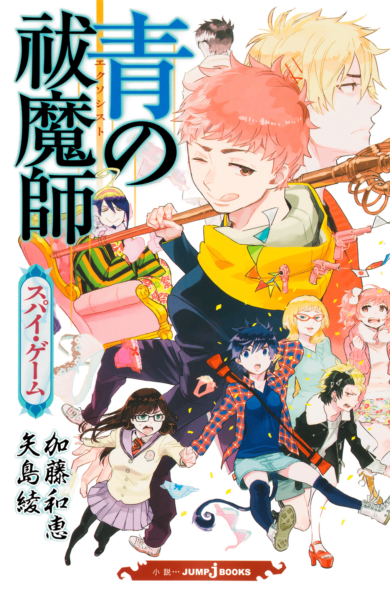
この本は縦書きでレイアウトされています。
また、ご覧になる機種により、表示の差が認められることがあります。
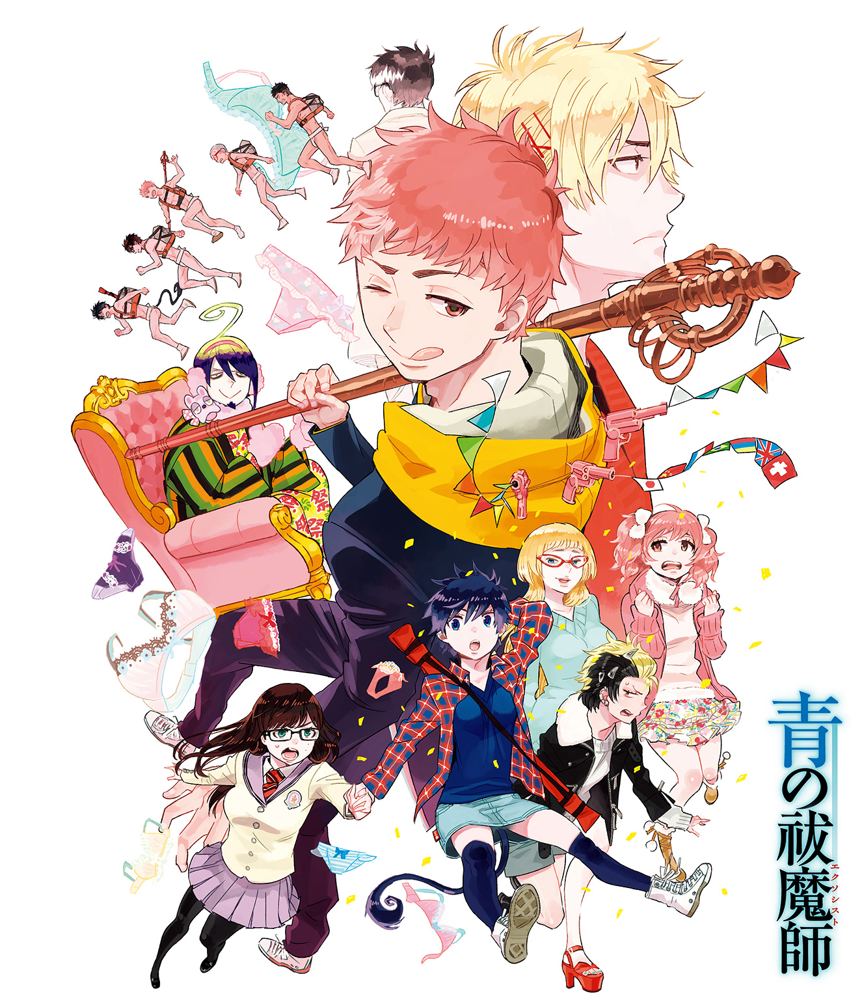
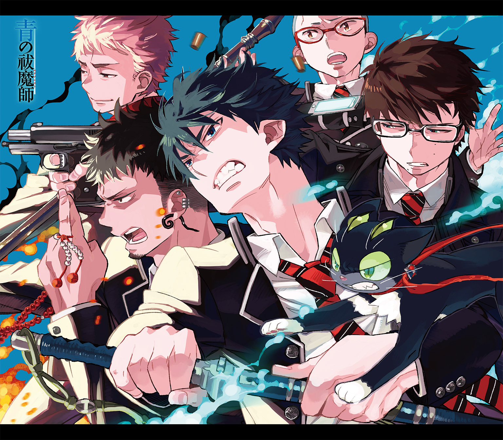
この世には二つの異なる次元が、合わせ鏡のように存在している。
一つは人間の住む〝物質界〟。
一つは悪魔の棲む〝虚無界〟。
本来であれば、両者は互いに干渉し得ないはず。
しかし、悪魔はこちらの世界のあらゆる物質に憑依することで、干渉し、脅かしていた。
『祓魔師』とはそれらの悪魔を祓い、物質界の平和を守る気高き騎士達の総称である。
刀剣で戦う『騎士』。
銃火器で戦う『竜騎士』。
悪魔を操って戦う『手騎士』。
聖書や経典を唱えて戦う『詠唱騎士』。
医療を担う『医工騎士』。
そして、それら祓魔師の最高峰たる『聖騎士』。
歴代最強と謳われた聖騎士・藤本獅郎は、
魔神の落胤である養い仔・奥村燐をその魔の手より守る為、壮絶な最期を遂げる。
残された燐は、正十字騎士團の名誉騎士であり亡き獅郎の友人でもあるという
メフィスト・フェレス卿に、ある選択を突きつけられる。
「大人しく我々に殺される」か。
「我々を殺して逃げる」か。
「自殺する」か。
燐はそのどれでもなく、祓魔師になり魔神を倒すことを誓い、
メフィストが理事を務める正十字学園祓魔塾の訓練生となる。
そして、そこには史上最年少で祓魔師となり、講師として教壇に立つ双子の弟・雪男の姿があった。
対・悪魔薬学の天才と呼ばれ、常に冷静沈着に任務に当たる弟に、燐はライバル心を燃やす。
「ぜってー、お前を追いぬいてやるからな!!」
「冗談は頭の出来だけにしてくれ」
――これは、そんな悪魔を倒す悪魔のお話。
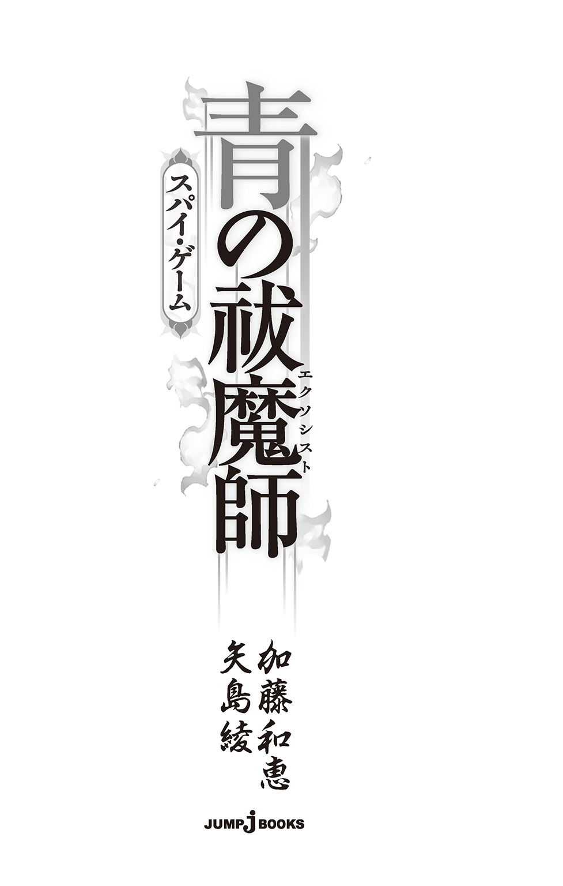
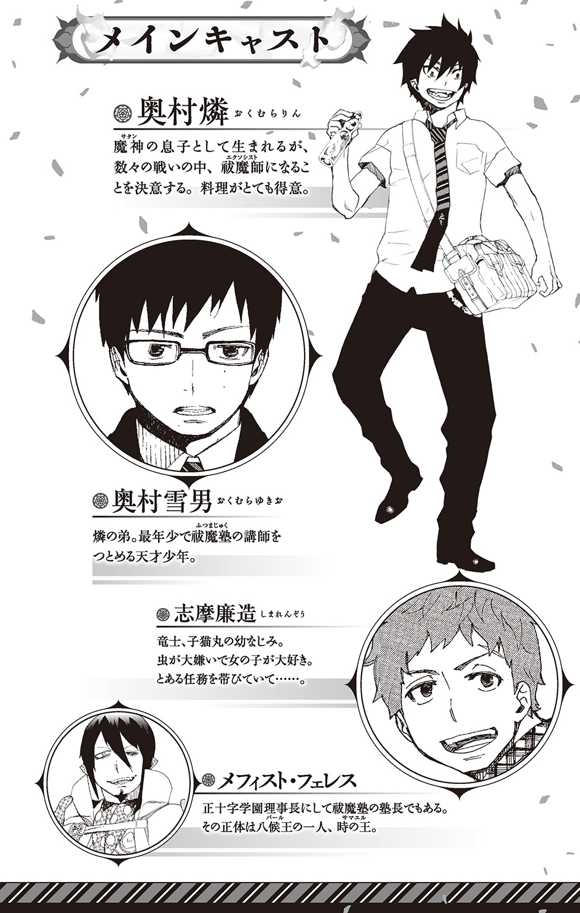
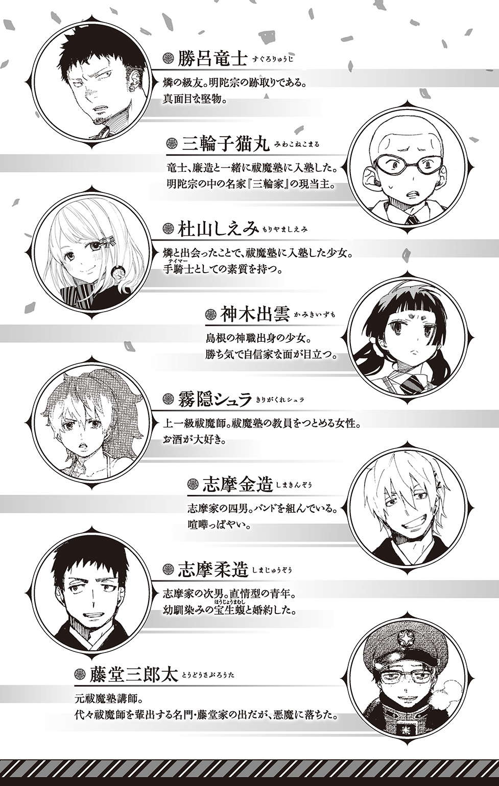
志摩廉造はリアリストである。
女子に対してのみ発揮される異常なテンションの高さを抜きにすれば、ごく普通のノリの少年だ。異性がらみ以外で熱くなることはなく、面倒臭がりの快楽主義者。
極度のオプティミストでもなければ、徹底したペシミストでもない。
何かに心酔し、忠誠や情熱、ましてや己の命を捧げるなど、考えすらせずに生きてきた十五歳。
そんな彼が周囲の抑止を受け入れず、選んだのは――――密偵として生きる道だった。
正十字学園に入学してまだ日も浅い、ある晩春。
志摩が執務室ことヨハン・ファウスト邸の扉をくぐると、
「グーテンモルゲン☆ 我が正十字学園へようこそ」
背もたれ付きの椅子にゆったりと腰かけたメフィスト・フェレスが、両手を広げてみせた。なんとも芝居がかった動作だが、この男がやると妙に様になる。
「学園にはもう慣れましたか？」
「そーですねえ。学校はキレイやし、可愛い子も仰山おるし、それなりに楽しくやってますわ」
志摩の答えに、それはけっこう、とメフィストが小さく嗤う。心底、愉しそうでいて、すべてに倦んでいるようなその笑顔に、志摩は意味もなく薄ら笑いを浮かべた。
ヨハン・ファウスト五世。またの名を、メフィスト・フェレス――。
もっとも、それらは数多ある仮の名前の一つにすぎない。
その正体は、悪魔の王族八候王の一人にして虚無界の第二権力者・時の王サマエル。一方では、名誉騎士の称号を持ち、日本支部長として約二百年にもわたり正十字騎士團に貢献し続けている。
どちらが本当の顔なのかわからない胡乱な人物だ。
そして、周囲の人間はおろか、志摩自身すら気づいていなかったその素質を見抜き、直属の密偵として雇いたい、とスカウトしてきた張本人でもある。
「時に、志摩くん」
と、メフィストが含みのある声で質問する。「スパイにとって最も大事なことは何だと思いますか？」
すでに一通りのスパイ教育を受けている志摩は、
（今更？）
と半ば拍子抜けする思いで、自信満々に答えた。
「如何にして相手を謀り、欺くかです」
しかし、対するメフィストは、
「それだと、六十点というところですかねぇ」
もの憂げな顔で欠伸を嚙み殺しながら、そう切り捨てた。
「大切なのは、そうすることで得られる情報です。情報が戦いにおいて著しく重要であることは、かの孫子も述べている」
――彼を知り、己を知れば、百戦殆うからず。
あまりにも有名な兵法の一文だ。志摩も耳にしたことがある。
「その貴重な情報を得るために、相手を欺き、騙す。そのためには、時として肉親を、友を、自分自身すら捨て去る覚悟が必要です。即ち、何ものにも揺らがない強い心を得なければならない」
そこで一旦、言葉を切ると、
「――というわけで、これから貴方には訓練を兼ねた、三つのミッションを与えます。見事クリアできた暁には、ご褒美として、これを差し上げましょう」
メフィストが机の上にすっと厚めの雑誌を滑らせた。
なにげなく目をやった志摩の顔色が、一瞬にして変わる。
「!? そ、それは......まさか」わなわなと震える唇から、うわずった声がもれる。「いや......そんな......アホな......」
その露骨なまでの動揺ぶりを悠然と眺めながら、メフィストが大仰に肯く。
「そう、貴方の愛読書『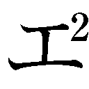ロ大王』のお蔵入り未公開アングルを集めたといわれる超レア雑誌です☆」
「発売と共に店頭から消えた、あの......？」
「ええ。一時間と待たずに品切れとなったうえ、過激すぎるという理由で、その後、出版中止となり、今やネットオークションで百万からのプレミアがついている幻の雑誌――その無修正版です」
「!! しかも......無修正......版やと？」
興奮のあまりその場に倒れかけた志摩が、なんとか踏みとどまる。
ごくりと生唾を飲みこむと、かすかに声を落とした。下卑た笑顔で、ええんですか、と尋ねる。
「仮にも理事長ともあろうお人が、生徒のご褒美にそんなもんチラつかせるやなんて......倫理的に問題あるんとちゃいます？ 仮にも教育者なんですし......」
「あ。私、悪魔ですから」
平然と答えるメフィストに、
「一生、ついていきます!!」
志摩がかつてないほど澄んだ眼差しで応じる。「今なら、紐なしバンジージャンプでもできそうな気がします」
「それはただの自殺です。――では、交渉成立ということでよろしいですね？」
「もちろんです!!」
メフィストが両目を糸のように細める。その瞳の中に、一瞬、剣吞な色が浮かんで、すぐに消えた。
「では、手始めに、貴方の苦手なものを教えてください」
「..................。女の子です」
本能で危険を察した志摩が、不自然な間の後で答える。「可愛い女の子が無茶苦茶、苦手です」
「おや？」と、メフィストがわざとらしく小首を傾げる。
「さきほど、この学園は可愛い子が沢山いて楽しいと言っていませんでした？」
「......――いえ」
痛いところを突かれた志摩が、しかし悪びれずに答える。
「苦手やからこそ、逆に強く惹かれるいうヤツです。思春期特有のアレですわ」
「ククク......まあいいでしょう」
思わせぶりに嗤ったメフィストが、ちょっと失礼、と言って、携帯電話を取り出す。しばらくの間誰かと話していたが、やがて上機嫌で電話を切った。そしてくるりと志摩のほうに向き直ると、
「これから、貴方には奥村先生の任務に同行してもらいます。それが、最初のミッションです」
「え、奥村先生について行くんですか？」
「ハイ」
「どないな任務なんです？」
「てんで、ラクショーな任務ですよ☆ ラクショー」
「............」
不思議なもので、あまり楽勝楽勝と言われると、逆に怪しく思えてくるのが人の世の常である。
が――。
「『ロ大王』未公開アングル集無修正版」
「もちろん、行きます!!」
ひとたび魔法の呪文を唱えられれば、志摩廉造という名の欲望の権化に、抗う術はなかった......。
「志摩くん。こっちです」
「あー。奥村先生～」
指示された現場に着くと、祓魔塾講師の奥村雪男が軽く片手を上げた。
すらりと背が高く、漆黒の團服が似合っている。メガネをかけた顔は地味だが整っており、なにより理知的だ。ものごしも穏やかで、女生徒から絶大な人気を誇るのも肯ける。
ただ、齢十五歳にして、すでにくたびれた中間管理職のような雰囲気があるのも事実だ。そのせいか、同性としての嫉妬を覚えることは少ない。人生、何が幸いするかわからない......と言ったら、彼はムッとするだろうが。
「土曜も当然のように仕事やなんて、先生も大変ですねえ。最近では、社畜言うらしいですよ？ 先生みたいなタイプ」
志摩がへらへら近づいていくと、雪男がメガネの奥で眉間にしわを寄せた。
「よりによって、あのフェレス卿の銅像に落書きをするなんて、随分と子供じみた真似をしましたね」
「え......？ あ、アハハハ。その場のノリでちょっと......てか、奥村先生。俺らまだ子供ですよ？」
「なら、随分と命知らずな真似をしましたね」
雪男がため息を吐く。それから、ぶつぶつとつぶやいた。「それにしたって、候補生を実戦に寄越すなんて――」
（なるほど。そういうふうに話がいっとるわけか......）
つまり、理事長の逆鱗に触れた哀れな候補生が罰としてここに送りこまれた――ということになっているのだ。あの理事長の性格を知っている者にとっては、あながち不自然な話とも言えまい。
納得した志摩は、「アハハハ」と無意味に笑ってその場を誤魔化した。
下手なことを言って、不審に思われては困る。
「任務内容は洗浄作業です」
諦観の表情になった雪男が、淡々と任務の説明を始める。
対象となるのは、北正十字の外れにある廃工場だった。
使われなくなってからどれだけ経つのかわからないが、目の前にそびえ立つ暗灰色の巨大な工場は、埃とカビに、錆びた鉄臭さが入り混じった独特の臭いも相まって、なんの手直しもせずに、即ホラー映画の舞台として使えそうだ。
「もともとは業界でも有数のお菓子会社の工場だったのですが、後継者の地位を巡って、肉親の間で陰湿な争いが繰り広げられ、ついには自殺者まで出たそうです」
その後は不幸続きで一気に業績が悪化。一年ほど前に会社は倒産したという。そのうえしばらく経つと、捨ておかれた工場に夜な夜な幽霊が出るという噂が立つようになった。
「その自殺者の幽霊が出た......いうことですか？」
「いいえ。事前調査によれば、この廃工場に幽霊はいませんでした。ただ、おびただしい数の魍魎が発生していたので、それを幽霊と見間違えたのでしょう」
なんや、と志摩が拍子抜けする。
魍魎といえば、悪魔族全体の中でも最下級の悪魔だ。一般人の目に見えないだけで、今もそこらじゅうにふわふわ漂っている。集合体にならない限り、厄介な相手ではない。
「そういったいわくもあって、今まで買い手がつきませんでしたが、ある娯楽系企業の社長が是非とも居抜きで買い取りたいと言ってきたので、取り急ぎ、洗浄作業をすることになりました」
雪男はそう言うと、彼の足元においてある特大サイズのスポーツバッグから、聖水噴霧器と書かれた肩掛け式のスプレーポンプと、替えのタンクを幾つか取り出した。
「これで洗浄します」
「へえ～。なんか、某幽霊退治の映画みたいで、カッコええやん♪」
志摩がスプレーを手に取り、カッコよく構える真似をする。「これで、魍魎を駆逐すればいいんですね？」
だが、雪男はすげなく頭を振った。
「――いえ。魍魎のほうはなにせ、数が多い。魍魎王がいるかどうかも、現段階ではわかっていないので、僕が担当します」
「え？ じゃあ......俺は何をしたらええんですか？」
「志摩くんには、虫豸を担当してもらいます」
「は？ 何て？」
「虫豸です」
「............チュ、チューチいうと......ま、まさか......」
志摩が顔面蒼白でガタガタと震えだす。雪男が気まずそうにすっと目を逸らした。
「数は少ないですが、ゴキブリに憑依した虫豸もいるので、そちらを重点的にお願いします。志摩くんは確か、詠唱騎士志望でしたよね？」
「!! 俺、お腹痛いんで、帰らせてもらいます！」
そう叫んだ志摩が脱兎のごとく逃げだそうとするのを、雪男の手が阻んだ。
「なっ!? 放してっ!?」
「......すみません。それはできません」
「なんで!? 奥村先生一人でへっちゃらな仕事やろ!? 後生やから、その手ぇ放して!!」
「僕もそうしてあげたいのはやまやまなんですが、君に虫豸を任せろというのは、フェレス卿からの厳命なんです」
「!?」
「絶対に君を逃がすなとも言われています。もし、妙な仏心を起こして君を逃がした場合、給料を十分の一に減らすと脅されているので、残念ですが......」
「十分の一って、どこのブラック企業!? てか、給料カットぐらいで可愛い生徒を売らんといてや!! そこは、断固脅しを跳ね除け生徒を守ってこそ、我らが奥村先生やろ!? な!? な!?」
「すみません。志摩くんが可愛い生徒かどうかは、僕の口からはとても......」苦しげな表情で雪男がつぶやく。「それに、僕にも生活がありますし」
前半はさりげなくヒドイうえに、後半はどこのくたびれたおっさんだよと言いたくなる台詞だ。
「自業自得だと思って諦めてください」
「奥村先生の人でなし!! 恨む!! 一生恨み抜く!! 先生のファンの女の子たちに、奥村雪男の悪評、性癖あることないことしゃべったる!! しゃべりまくったる!!」
恐怖のあまり錯乱状態でわめく志摩に、
「――――――――」
カチッ、と何かのスイッチが入ったらしき雪男が、スプレーポンプを肩に下げ、抵抗する志摩を能面のような顔でズルズルと引きずっていく。
「いやあああああああああああああ!! すんません！！！！！！ うそうそうそ！！！ 今のナシ！！！！！！！ ナシ！！！ 穏便に話し合いましょう！！！！ 奥村先生！！！！」
「僕は人でなしらしいので」
「だから、噓ですって！！！！ 噓！！！ お願い！！！ やめて！！！ 助けてえええええええ！！！ 誰かあああ！！！！！！ 坊っっ！！！！ 子猫さーああああん！！！！」
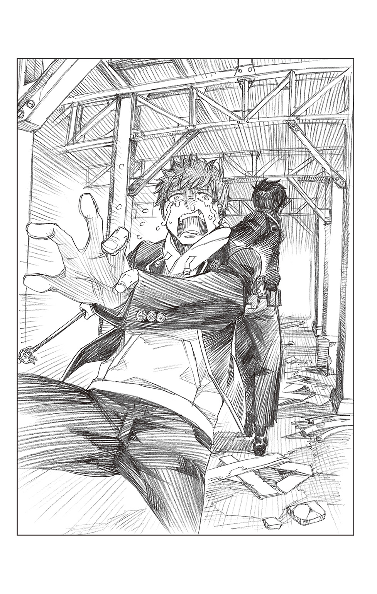
ぎゃあああああああああああああああああああああああああああああああああああああああああああああああああああああああああああああ――――――――
廃工場に悲痛な叫びが木霊し、いつしか、ぶつりと途切れた。
「どうでした？ 少しは虫に慣れましたか？」
「..................とりあえず、奥村先生だけは怒らせたらアカンいうことは......わかりました......」
ぐったりと青ざめた志摩がメフィストにそう報告する。「ドＳや......鬼や......外道や」
志摩が恐怖のあまり失神するたびに、
『志摩くん。いつまでも寝ていると、口内に虫豸が侵入しますよ』
耳元で冷ややかにささやくその姿は、まさに悪魔としか言いようがなかった。普段がなまじものごしの柔らかい好青年であるだけに、エグさが増したのかもしれない。
「皆、あの爽やかイケメンフェイスに騙されとるんや............ホンマは、鬼や......悪魔や！」
メフィストは「おやおや」と肩をすくめてみせると、
「まあ、ミッション１はクリアということでいいでしょう」
と懐の深いところを見せた。
「!! ホンマですか!?」
現金なもので、途端に志摩が元気になる。メフィストが鷹揚に肯く。
「次の訓練は、敵地にいち早く順応し、空気の如く同化するスキルの向上を図ります。いずれ、貴方にはイルミナティに潜ってもらいます。そのためには、最重要――必要不可欠なスキルといえるでしょう」
「順応、同化......？ なんや、小難しそうですね」
「百聞は一見にしかず。ついてきてください」
メフィストが執務椅子から優雅に立ち上がる。
その手には、いつの間にか古びた鍵が握られている。それを一番近くにある扉の鍵穴に差しこむと、
「さあ、どうぞ」
そう言って、扉の前の場所を志摩に譲った。
志摩がおっかなびっくり扉に手を伸ばす。アンティークふうな細工のなされた取っ手はひんやりと冷たかった。
「この鍵、どこに繫がってはるんです？」
「さあ？ どこでしょう」
メフィストが笑顔でそう嘯く。
恐る恐るドアを開けると、魔法の鍵で繫がった先は、かなり老朽化の進んだ玄関だった。その広さや造りから、個人宅のものではないとわかる。
これは――。
「奥村くんたちが暮らしとる、旧館の玄関やないですか」
「ピンポーンピンポーン☆ これは〝男子寮・旧館の鍵〟です」
メフィストが、ふざけた擬音で応じる。
「貴方はこれから食堂に行って、奥村くんと談笑するなりし、当然のような顔で奥村先生の分のご飯を失敬して、見咎められることなく出てきてください」
「は？」
「それが、ミッション２です」
一瞬、ポカンとした志摩が、直後、
「無理!!」
と絶叫した。そして、はっと両手で自分の口を覆うと、奥にいるであろう兄弟に気づかれぬよう、今度は小声でうめいた。「絶対、無理！」
「大丈夫ですよ。奥村先生なら理不尽な残業を大量に頼んでありますから。しばらくは帰ってきません」
「理不尽て......そんなん、もっとヤバイやないですか!? 仕事で疲れて帰ってきて、他人が自分のメシを勝手にむしゃむしゃ食っとったら、どんな人間のできた人でも普通、怒りますよ!? それを、あの奥村先生にやて!? ムリムリムリ!!」
絶対殺されると、怯えきった志摩が必死に訴える。メフィストが浅く笑う。
「奥村先生は温厚な方ですから、きっと笑って許してくれますよ」
「いやいやいや......あの人、意外にキレやすいですから!! 第一、なにが悲しゅうて、そないぬらりひょんみたいな真似せなアカンのですか!? それ、もうスパイの訓練ちゃいますやん!! 無銭飲食の技術ですやん!!」
「妖怪の属性なんて、よくご存じですねえ......ああ、そういえば貴方はお寺のご出身でしたね。なるほど」
メフィストがどうでもいいことに感心する。
「おイヤですか？」
「イヤです」
きっぱりと志摩が拒絶する。「どうしても？」「お断りします」
そんな彼の耳元に、メフィストがそっと魔法の呪文を唱える。
「『ロ大王』未公開アングル集」
「!!」
「無修正版」
「......行きま――..................ぐっ......く............ダメや自分............目の前の美味そうな餌につられたら、アカン............」
志摩の中で欲望と恐怖がせめぎ合う。「............い......ぐっ............アカンて............それは、アカン......」
「よっぽど奥村先生が怖いんですね」
メフィストがわざとらしく嘆息する。
「やれやれ、しかたがない――」そう言うと、パチンと指を鳴らした。その手に、正十字学園新聞が現れる。「飴で釣れないなら、私としても本意ではありませんが、明後日の月曜日、朝一番でこれをばら撒くとしましょう」
「!?」
大きく、号外と書かれたその紙面に、奥村雪男の顔写真を見つけた瞬間、限りなく嫌な予感がした。
志摩の表情に気づいたメフィストがにっこりと微笑む。とってつけたような猫撫で声でささやく。
「奥村先生について事実無根のあんなことやこんなことを書き綴った、ステキな内容の号外です。これを、このタイミングで学園中にばら撒いたら......どうなると思いますか？ ねえ、志摩くん？」
「!!」
志摩の顔が死人のように青ざめる。
――恨む!! 一生恨み抜く!! 先生のファンの女の子たちに、奥村雪男の悪評、性癖あることないことしゃべったる!! しゃべりまくったる!!
自分の発した言葉が耳元で蘇り、頭の中をぐるぐるとまわる。十中八九、間違いなく、自分が犯人だと思われるだろう。
雪男の能面のような冷たい顔を思い出し、ガチガチと震える志摩に、メフィストがもう一度、同じことを尋ねる。
「どうしてもおイヤですか？」
「..................イ......イヤ、や......ないです」恐怖にうわずった声でつぶやき、志摩ががくりと肩を落とす。「喜んで......行かせてもらいます」
「大変、よくできました☆」
メフィストは満足そうに肯くと、
「ふむ。これは赤だしのお味噌汁と、特製の醬油ダレにたっぷり浸かった鮪の切り身とアボカドの匂いですかな？」
「............」
「確か、奥村先生の好物はお刺身でしたねえ」
遠い目をし、そっとつぶやく。
悪魔のささやきに、志摩の顔色がまた一段と悪くなった。
「おばんどすえ～。奥村くん、元気しとる？」
「おー、志摩。珍しいな。お前一人か？ 勝呂と子猫丸は？ 一緒じゃねーの？」
食堂に入っていくと、厨房で料理に使った器具を洗っていた燐が、エプロンで手を拭いながらこちらに近づいてきた。
長机の一つに、二人分の夕飯が用意されている。
メフィストの推測通り、なめこのお味噌汁（赤だし）に鮪とアボカドの漬け丼。それに、手作りらしき野菜の浅漬けが小鉢に入っている。グラスには氷入りの麦茶が注がれていた。デザートの器には、少々傷んだ桃とオレンジを食べやすく切り、シロップをかけたものが、見目うるわしく盛られている。
普段の燐の性格を知っている者ならば、誰もが驚かずにはいられないであろう、完璧な食卓だった。
「いやぁ～、美味しそうな匂いやね～」
「だろ？ 美味そうな刺身が半額で手に入ってさ。ただ、それだと量が少ねえから、味つけを濃い目にして、アボカドでかまさししたんだぜ」
うれしそうに燐が答える。
それに対して志摩が「奥村くん、かまさしやのうて、かさましやで。てか、かまさしって何？」と笑顔で突っこみつつ、内心、
（ヤバイで......ヤバイで、これは）
と冷や汗を垂らす。
量が少ないということは、余剰分がないということに他ならない。つまり、自分がこれを食べてしまったら、完全に『奥村先生』の分はなくなるのだ。
しかも、燐がなにげない口調で爆弾を落とす。
「今日、寝坊して雪男に弁当作ってやるの忘れちゃってさ。最近忙しくて、メシ買いに行く時間もないみてーだし、アイツ、腹減ってんだろうなぁ～。アイツ、腹減ると機嫌悪くなるからなぁ」
（なんで、今それを言うんや......奥村くん！ これ以上、罪悪感増やさんといて!!）
思わず、打ちひしがれそうになる。
――しかし、あの理事長のことだ。ここで逃げれば、本当に号外をばら撒くだろう。そうしたら、もっと恐ろしい目に遭うこと必至だ。
そして、あの幻の雑誌は本当の幻となってしまう――。
（やるしか、あらへん）
悲痛な決意をした志摩が、ひきつった笑顔で雪男のほうと思しき席に座る。
「いや～、ホンマに美味しそうやわ。彩りも香りも最高やし、奥村くん、祓魔師だけやのうて料理人にもなれるんやない？」
「いやぁ～。それほどでもねーけど」
さりげなく箸をつかむと、それまで照れまくっていた燐が、素早く見咎めた。
「オイ、志摩。お前、何やってんだよ？ それ、雪男のだぞ？」
「いやー、美味しそうやなあ、と思って」
「食うんじゃねーぞ？ 腹減ってんなら、カップ麵作ってやっから」
「いや、ホンマにすごいわ。こんなん作れるって知られたら、奥村くんモテモテやん？」
「!! マジ!?」
「マジマジ」
笑顔で相槌を打ちながら、そっと漬け丼に手を伸ばす。醬油と胡麻の芳ばしい香りが漂ってくる。千切った揉み海苔と小葱が散っているのが、目にも楽しい。
「でもなー、前にもそうやって雪男にのせられたけど、結局、モテたのは何もやってないアイツだけだしな............つーか、マジ、食うなよ？ アイツ、怒ると怖ーから」
「まあまあ。そんなことより、奥村くんかて、その頃より、確実に料理の腕は上がっとるんやろ？」
「そりゃー、まあ、そうだけどよ」
「よう見たらなかなか男前やし、これほどのモンが作れるんや。今度こそ、ファンクラブとかできちゃうかもしれんで？」
「!! ヤベェ、ついに俺の時代が!? 人生初のモテ期か!?」
ドキドキと期待に胸を膨らませる燐の注意が逸れた隙に、志摩がごく自然に鮪の漬けとアボカドを口に運ぶ。続いてタレの染みた飯をかっこみ、浅漬けをつまみつつ、当然のように赤だしの味噌汁を啜る。
店で出されるような味わいが、逆に怖い。
早く、一刻も早く食べ終え、ここを立ち去らなければ......。
「こんな美味い飯を作れるんやろ？ もっと、自信持ってや。奥村くん」
「志摩......お前って、けっこういいヤツだったんだな」
その〝けっこういいヤツ〟が、弟のメシを無断で食べているにもかかわらず、さんざ持ち上げられその気になった燐がジーンと両目を潤ませている。その隙に、志摩はデザートに取りかかった。燐があれこれと世話を焼く。
「スプーンもあんぞ？ そうだ。お茶のお代わりいるか？」
「あ、気にせんでええよ～。もう、終わるし」
「何が終わるんですか？ 志摩くん」
「いや、せやから、ご飯が食べ終――」
背後からにこやかに尋ねられ、普通に答えかけた志摩が、ピキッと固まる。そのまま、石のように椅子の上で凍りついていると、頭の上から絶対零度よりもなお、冷たい声が降ってきた。
「どうして、君が僕の席で僕の夕ご飯を食べているのか――――――納得する答えを、是非ともお聞かせ願えますか？」
「............これには......海よりも深いわけが......あって、ですね......」
「どんなわけです？」
「それは......言えへんのですけど」
「............」
「可愛い生徒のお茶目なイタズラとして、許して............くれませ、んよ、ネ――？」
志摩が青ざめた顔に半笑いを浮かべて振り向くと、そこには作りものじみた笑顔を浮かべた紛うことなき鬼が立っていた......。
――翌朝、志摩が死人のような顔色で執務室に向かうと、メフィストがとってつけたような笑顔で、昨日はお疲れさまでした、と労いの言葉をかけてきた。
「それで？ 首尾はいかがです？」
昨日の結果など、自分の報告を待つまでもなく知っているだろうに、ウキウキと尋ねてくる。
よっぽど、「どうせ、アンタ、なんもかんも知ってはるんでしょう」と言ってやりたいのを志摩はぐっと堪えた。
「......囀石を膝にのせたままきっちり二時間、廊下で正座させられました」
さらにその後、一時間近くも説教を食らったのだ。
「ちょうど、仕事の電話が入って......アレがなかったら、もっとかかったと思います」
「いやはや。奥村先生ほどの方でも、食べものの怨みは恐ろしいようですな」
メフィストがさも嘆かわしげにため息を吐く。その実、しっかりと笑っている。
「――で？」と話を変えてきた。「奥村くんの漬け丼はいかがでした？」
「............泣ける美味さでした」
「フフフ......まあ、いいでしょう。おお負けに負けて、ミッション２はクリアということにしておきます」
「！ じゃあ――」
うなだれていた志摩が、ガバッと顔を上げる。震える声で尋ねた。「『ロ大王』未公開アングル集無修正版は............」
「あと一つ、ミッションをクリアすれば差し上げますよ」
にっこりと微笑むメフィストに、
「神か!!」
志摩が歓喜の涙を流す。
「悪魔です」
「一生、ついていきます！」
「またそれですか。それでは、最後のミッションですが――」
「奥村先生関係はナシでお願いします!!」
メフィストの言葉を遮り、志摩が先手を打つ。
「......今、一生、ついてくるとか言いませんでした？」
「それとこれとは話が別ですんで」
「けっこういい性格してますねえ、貴方も」
メフィストがクククと笑う。そして「まあ、いいでしょう」と甘いお菓子でも食べた時のような声で告げた。
「次は、祓魔屋の娘さんに関係するミッションです」
「!? 杜山さんに!?」
その言葉で俄然やる気になった志摩が、メフィストの執務机に身を乗り出さんばかりになって、
「杜山さんのスリーサイズを調べてくるんですね!?」
「違います」
「お任せください!! たとえ、行く手にどんな困難が待ち受けていようとも、このミッションだけはやり遂げます!! 人類の夢のために!!」
「ものすごくカッコ悪いことを、さもカッコよさげに言いますね。――でも、違います」
呆れた様子のメフィストが再度、否定する。
「今日の午前中に祓魔屋に来客があります。その人物は、頼んでおいた書物を受け取りがてら、祓魔屋の娘さんの勉強を見てさしあげ、お茶を一緒にするはずですので、貴方はそこにズカズカと割りこんでいき、さも最初から三人だったかのように、自然に振舞ってください」
「えらい具体的ですけど......まさか、その人物って」
「ええ、奥村雪男先生です」
「！ 結局、奥村先生がらみやないですか!!」
志摩が鋭く突っこむ。
「しかも、それ、絶対、尋常やなく怨まれるパターンですから!! シャレにならんて!! ムリムリムリムリコワイコワイコワイコワイコワイコワイ――」
「どこまで奥村先生が怖いんですか？」
「ともかく、ホンマ、ムリです......今度こそ、ホンマに殺される。ここは、穏便に杜山さんのスリーサイズにしたってください!!」
涙混じりに志摩が懇願する。メフィストはふうっと息を吐き出した。いかにも、やれやれというふうに、
「しかたありませんね。では、奥村先生のスリーサイズでけっこうです」
「わけわからん!! どーして、そこにこだわるの!? 心底どーでもいいうえに、また奥村先生関連やし!! そもそも、どうして、杜山さんや出雲ちゃんやないんですか!? 朴ちゃんでもええし――そこは、女子でしょ!? 最後の最後に、ご褒美的ミッションで!!」
「だって、それじゃあ、面白くないじゃないですか」
「面白いて、何!? 完全、遊び気分!?」
「では、女性を手玉にとる訓練を踏まえて、聖書：教典暗唱術の授業を担当してくださっているアンジェリーヌ先生を口説き落とすことにしますか。ご褒美的ミッションで☆」
「どんなご褒美っ!? なんのご褒美にもなっとらんですけど!? むしろ、拷問!?」
「では、椿薫先生を口説き落とすことにしましょう」
「男やし!! 女やないし!! 顎、割れとるし!! さらに、ヒドくなっとるやないですか!! 血反吐吐きますよ!?」
ぎゃあぎゃあと騒ぐ志摩に、もう一度深くため息を吐いたメフィストが、「わかりました」と言う。
「――では、潜入＆変装の訓練を兼ねて女子寮に潜入してください。誰にも貴方だとバレることなく、寮内を散策できたら、ミッション完了とし、件の雑誌を差し上げます」
ようやくや。
ようやく、スパイのミッションらしゅうなった......。
しかも、ひそかに待ち望んでいた美味しいシチュエーション――。
夢にまで見た女子寮に、理事長公認で潜入できるんや......!!
これまでの苦労を帳消しにしてなお、あまりあるほどの感動と興奮を胸に、志摩がいそいそと寮の自室に戻る。
日曜の昼間だが、同室の子猫丸や、なにかと出入りすることの多い勝呂の姿は見えなかった。
「大丈夫や......子猫さんは、なんとかいう同好会の集まりに行っとるし、坊はこの時間やとジムで筋トレやな」
二人とも夕方まで寮には戻ってこないはずだ。安心して志摩が着替えを始める。
健全な男子高校生にとって永遠の憧れである女子寮。
その楽園に潜入するためならば、女装など屁でもない。
しかも、この夢のようなミッションを終えた暁には、あの、超レア雑誌が手に入るのだ......。
「長かった――。ホンマ、辛い道のりやった」
でも、それも、もう終わりだ。
もはやあの本はこの手の中にあるも同然。
挙句、休日で気を抜いている女子たちのなまめかしくも愛らしい姿をこの目で堪能できるのだ。
「もしかすると、風呂上がりのあられもない姿の出雲ちゃんとか、パジャマ姿の朴ちゃんとか、見られるかもなぁ......♥」
スパイ万歳と胸の中で叫びつつ、メフィストから渡された変装道具一式を自分のベッドの上にばら撒く。
志摩の身長は百七十六センチ。特に瘦せ型というわけでもない。その時点で、かなり大柄な女子生徒になることは否めない。そのうえ生来のナンパな性格のお陰で、女子の友人知人も多い。たとえ、黒髪ロングのカツラを被り、縁の太いセルフレームのメガネをかけ、女子の制服に身を包んだとしても、見る人が見れば、彼の変装だとわかるはずだ。
――が、志摩はあえてそこから目を背けた。
（バレるバレる思っとるとバレるんや!! 堂々といけば、意外とイケる!! いや、イッたる!! それが男っちゅーもんや!!）
と胸の中で熱く拳を握る。
（待っとってや、出雲ちゃん!! 待っとってや、女子寮の皆!!）
嬉々としてブラウスに袖を通し、スカートを穿こうとしていた――まさに、その時。
部屋の外で、
「せっかくの休日に、お手間をとらせてしまって、すみません。勝呂くん、三輪くん」
「ええですよ。どうせ、そろそろ昼飯でも食べに行こう、思ってましたし」
「僕も、部長さんの都合で、今日の写経愛好会は夕方からいうことになったんで、気にせんといてください」
「それにしても、休日に草書体の勉強って、ホンマ、努力家やな」
「いえ。興味深い文献を手に入れたんですが、あいにく、かなり崩した草書体で書かれていまして読めないんです」
「あー......確かに、読み慣れてない人にはきついかもしれんで」
「そうですねえ」
「それで、祓魔屋さんに書体の読み方に関する書物を頼んでおいたのですが、今朝、伺ったら、急に見当たらなくなってしまったそうで......。弱っていたら、フェレス卿が、お寺ご出身のお二人なら持っているんじゃないか、と」
「それやったら、僕の荷物に入ってると思います」
「もしかしたら、俺のほうにあるかもしれないんで、こっちになかったら、俺の部屋も探しますわ」
「ありがとうございます」
――そんな会話がなされていようとは夢にも知らず、腹をへこませ、スカートのホックをとめようとしていた志摩は、突然開いたドアを前にその場に凍りついた。
「あ......」
「............」
ドアの外に立っていた三人も、一様に固まった。
ショックから立ち戻った子猫丸が、震える声でつぶやいた。
「志摩さん......アンタ、そないな趣味が......」
「え!? 子猫さん!! ちが――」
「お前......」
「坊まで!! だから、違いますって......!!」
「落ち着いてください。三輪くん、勝呂くん。これには、なにか事情があるはずです」
「!! 奥村先生......」
配慮ある言葉に、志摩が昨日の恐怖も忘れ感動したのも束の間、
「それを着て、何をするつもりだったんですか？」
「は？」
「なにかよからぬことを企んでいたのではないですか？」
「はあ......!?」
氷のように冷ややかな目に射すくめられ、ぞっとした志摩がぶんぶんともげそうなくらい頭を振る。
「違います!! 違いますって......俺はただ、女子寮に――」そこで、はっと自分の口元を押える。だが、後の祭りだった。
「語るに落ちましたか」
雪男がこの上もなく蔑んだ眼差しを向けてくる。
その道端の汚物でも見るような目つきのまま、
「女子寮に潜入するために女装までするとは、計画的な犯罪ですね」
「志摩さん............アンタ、最低や」
「ち、違っ――くはないんですけど、ホンマ、違うから......!! 信じてください!! 子猫さんも、信じて!! その目、やめて!!」
「警察に電話して、早急に身柄を引きわたしましょう。三輪くん」
「はい......それが一番、志摩さんのためなんですよね」
「なに言うてんの!? 二人とも!! 冗談やろ？ ネ？」
「......くっ......志摩さん、堪忍」
「ぎゃああああああ!! ホンマに電話かけようとしないで!! 誤解やから!! 誤解誤解!! 切って、ホンマ、切って!! 子猫さんっっ!!」
志摩が半泣きで懇願する。
その時、ボキボキという嫌な音が聞こえてきた。
恐る恐る視線を向けると、今まで黙っていた勝呂が、仁王像のような顔で指の関節を鳴らしている。
「ぼ、坊......？」
「志摩......歯ァ、食いしばれや」
地獄の底から響くような声で、勝呂が告げる。「その歪みきった根性、叩き直したる」
恐怖のあまり、志摩が「ぴぇ」と妙な音をもらす。直後、顔の前で両腕を大きく左右に振り、
「死んじゃうから!! 根性直る前に、志摩さん、死んじゃうから!!」
「安心せえ。お前を殺して、俺も死ぬ」
「全然、安心できへんから!! むしろ、重いわ!!」
今やガン泣きになった志摩が、必死で弁明する。
「ホンマ、誤解なんやて!! 坊!! 後生やから、やめて!! 殴らんといて!! だいたい俺がそない卑劣な真似をすると、本気で思ってはるんですか!?」
半ば悲鳴のような声で訴える志摩に、
「思っとる」
「思っとります」
「思います」
図らずも三者の声が合わさる。見事に即答だった。誰一人、弁護にまわろうとする者はいない。
「ヒドイわ、皆!! あんまりや!!」
号泣する志摩に、勝呂は聞く耳持たぬという様子で、指を鳴らしながら近づいてくる。
「最後に言い残す言葉は、それでええんか？」
「ひいいいいいいいいいいいいいいいいいいいいいいいいいいいいいいい......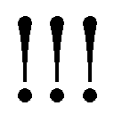」
悲鳴をあげた志摩が逃げようとし、慌てたせいで足がもつれ、その場に尻餅をつく。
その時、ベッドから変装用のカツラとともに、何かがバサリと落ちた。
「............え......？」その際どいアングルの表紙に、志摩の頭が真っ白になる。どうして......なぜここにそれが......!?
（まさかフェレス卿のしわざなんか......!?）
「『ロ大王』未公開アングル集無修正版って書いてありますね」
雪男が恥ずかしいタイトルを淡々と読みあげる。
「志摩さん......アンタ、ホンマ、最低やで......」
もはや、これ以上ないというほど蔑んだ顔になった子猫丸が、冷ややかにつぶやく。
「違うんや......!! これは......その――」
志摩が激しくうろたえていると、伸びてきた腕が幻の雑誌を取り上げ、一気に引き裂いた。そのまま、ビリビリと破り捨てる。
「こないなもんばっかり読んどるから、破廉恥なことばっかり考えつくんや！ 恥を知れ!!」
「ぎゃあああああああああああああああああああああああああああああああああああああああああああああああああああああああああああああああああああああああああああああああああああああああああああああああ――――――――」
続く志摩の悲痛な叫び声は、熊をも殺す友の怒りの鉄拳を浴びた故か......。
はたまた悪魔に魂を売るほどに欲した激レアエロ雑誌を無残に破り捨てられた故か――。
本人が気絶してしまった今、真相は闇の中である。
――その晩。
「兄上、随分とご機嫌ですね」
執務室のソファーに寝転がりながら、パンダ飴を舐めていたアマイモンが、愉しげに携帯ゲームに興じている兄に向かって言った。
ゲーム機から顔を上げずにメフィストが尋ねる。
「そう見えるか？」
「ハイ」
「我ながら、思わぬ拾いものをしたからだろう」
無論、志摩廉造のことである。
「兄上の出したミッションをなに一つクリアできていないのに？」
「あの馬鹿馬鹿しい課題自体に意味などない」ただのお遊びだと、メフィストが喉の奥で笑う。「あれは、私直属の密偵足る価値があるかどうか見るためのテストだ」
そして、彼は見事それをパスした。
アマイモンが憑依体の首をぐぎっと傾げる。深い隈をその下に浮かべた両目が、なんの感情の色もなく兄の横顔を映した。
「僕にはただのバカにしか見えませんが」
「愚かな弟め」
メフィストが弟の言葉を鼻で嗤う。
「圧倒的に欲深く、下劣な本能に忠実な、弱く浅ましい人間そのものであるのに、あの男からは何か、決定的に抜け落ちている」
メフィストが画面から顔を上げる。その顔には、窓の外に広がる闇よりもなお、昏い笑みが浮かんでいた。
「だからこそ、私を必要以上に恐れない。それでいて、過剰に媚び諂うこともない。幼くして、夜魔徳ほどの悪魔を使役していたというのも肯ける。あの様子なら、易々と洗脳されることもあるまい。持って生まれたそれか、後天的に身につけたそれかは不明だが、とんだ逸材だ」
そうでなければ、とてもあの長兄の元でスパイなどできまい――。
メフィストが、高揚とはほど遠い冷めた顔で告げる。
「私が欲しいのは、死を甘んじて受け入れ、偽の情報を流して終わりの〝死間〟じゃない。必要な情報を得続ける〝生間〟だからな」
スパイという響きにうっとりするような自己陶酔型の人間や、妄信が過ぎて己の命を軽く扱うような人間は必要ない。
「わかるか？ アマイモン」
「僕にはよくわかりませんが、兄上が喜んでいらっしゃってなによりです。では」
これ以上のやりとりが面倒になったのだろう、アマイモンはそう言うと、無表情に飴を舐め続けた。
メフィストはマイペースな弟を呆れたように見ると、再びゲームの画面へと視線を戻した。液晶の中では、ＲＰＧのキャラクターがより頑丈に、より俊敏に、カスタマイズされている。
両目を細めたメフィストが、独り言のようにつぶやく。
「そろそろ、仕上げか」
さて、どう育つか――。
否、どう育て上げるか。
悪魔は笑う。
すべてをその手のひらの上で転がしながら......。
盤上で歪に大きく育っていく駒を眺め、どこまでも冷ややかに、悪魔が嗤った。
この領収書の山をどうするか――。
それが彼女・霧隠シュラの目下の、そして最大の関心事であった。日頃の散財のせいで生活費はすでに底をつきかけている。下手をすれば、給料までの残り半月、ほぼ飲まず食わずで乗りきらねばならない。
ゆえに、理事長の独断で近日開催予定のイベントのことなど、頭の片隅にもなかった。が......。
「――ああ、シュラさん。任務報告書がまだ出ていないって、情報管理部の佐藤さんが困ってましたよ」
「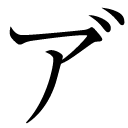ァ？ 面倒臭えな」
祓魔塾の廊下で雪男とすれ違った時も、領収書の日付をどうにか改竄できないものかと、試行錯誤しているところだった。
「こっちはいろいろと忙しーんだよ」
「なにを大事そうに眺めてたんですか？」
手元をのぞきこんできた雪男が「領収書？」と眉をひそめる。
「しかも、ほとんどが二か月前、古いものだと三か月も前のものじゃないですか」
「経理にまわすの、うっかり忘れちまったんだよ。オイ、雪男。お前でなんとかしとけ」
「無理ですよ」
そっけない返答にシュラがチッと舌打ちする。「たった二、三か月ぐらいで、ケチ臭いこと言ってんじゃねーよ」
「あなたがだらしないせいでしょう？ だいたい、全部居酒屋とラーメン屋のじゃないですか。完全に私用の飲み食いですよね？ コレ」
痛いところを突かれ、シュラは、あー、と髪の毛を搔き毟った。
「やべーな。今月マジピンチなんだよ!!」
「それはそれは、ご愁傷さまです」恐ろしく棒読みに雪男が言う。「いっそ、ダメ元で経理部にまわしてみたらどうです？」
「そんなん、もうとっくにやってるって」
「で？」
「『支部長の許可があれば、いつでも清算します』だとよ......クソ」
「じゃあ、フェレス卿に頼むんですね」
どこまでもつれないその返答に、シュラが露骨に顔をしかめる。「お前、本当に可愛くなくなってきたな」
「高校生にもなって可愛いわけがないでしょう？」
雪男は冷淡にそう言うと、
「――では、僕はこれで。執務室に用事がありますので」
と、その場を後にした。カツカツカツ、と革靴の底が硬質な音を立てる。
「なぁーにピリピリしてんだ？ アイツは......」
今日に限らずこのところ常に機嫌が悪い。しかも彼だけならば、仕事が忙しすぎるせいだ、ですむが、他の男性講師陣や男子塾生もなにやら浮かない顔でイライラしている姿がいやに目につく。
「集団ヒステリーかぁ？」
小首を傾げたシュラが、ふと廊下の中ほどの壁にある掲示板に目をやり、ほどなく「あー......」と納得する。「アレか」
第一回☆ 正十字学園祓魔塾褌祭り!! 開催決定♪
褌マラソン選手大大大大大募集中!!（注意：男性講師及び男子塾生、強制参加☆）
上部を画鋲で留められたポスターが、ひらひらと風に揺れる。シュラは幾分の同情をもってそれを眺めた。
「――まあ、普通に嫌だよな。こんな寒空に褌一丁なんざ。アイツもお年頃だしさ」
イライラしたくなる気持ちもわかる。文句の一つも言いたいだろう。
だが、しょせんは他人事だ。
「んなことより、コレだ。コレ」
すぐに我に返ると、彼女は再び、大量の領収書を前に頭を悩ませ始めた――。
雪男が重い足取りで祓魔塾の教室に戻ると、待ちわびていた面々が駆け寄ってきた。
「で？ どーだったんだ？ 雪男。中止になったのか!?」
兄が代表して尋ねてくる。
無言で頭を振ると、彼らの顔が一様に曇った。雪男が疲れた口調で報告する。「――有志の先生方と抗議はしましたが、まるで聞く耳を持ってもらえませんでした」
「あのクソピエロ......」
燐がぎりっと奥歯を嚙みしめる。
「この寒いのに、褌一丁とかどんな嫌がらせだよ!?」
「そもそも、ここは神聖な学び舎やぞ!? それを、こないわけのわからんイベント......」
ふざけとる、と勝呂が教壇脇の告知ポスターを叩く。壁全体がガタガタと揺れた。
「やめなさいよ、このバカ力」
皆から離れた椅子に座っている出雲が、鬱陶しげに鼻を鳴らす。「壁が壊れるでしょ？」
その冷ややかな口調に、勝呂のまなじりがさらに吊り上がった。
「随分と他人事みたいやな。神木」
「フン。みたいじゃなくて、実際、他人事なのよ。悪い？」
出雲がせせら笑う。それに対し、勝呂のこめかみがピキッと引き攣った。ほお、と凄みのある声でつぶやく。
「お前も塾生やろ？ 参加してみたらどうや？」
「なっ!? ア、アンタ、あたしに褌穿けって言うの!? なに考えてんのよ!? このセクハラゴリラ!! イヤらしい!! 変態!!」
怒りで真っ赤になった出雲が、両手で上半身を隠すような恰好で怒鳴る。
同じく憤怒のあまり真っ赤になった勝呂が、アホか、と怒鳴り返した。「そないなこと誰も言うてへんわ!! ここに『女性は法被・短パン可』て書いてあるやろ!? なにが、セクハラゴリラや!? てか、誰が変態や 訂正せえ!!」
「知らないわよ!! てか、うるさいから耳元で怒鳴らないでよ！ この野蛮人!!」
「お前のほうこそ怒鳴ってるやないか!! このヒステリー女!!」
「なんですって!!」
「坊......神木さん......」子猫丸が、また始まった、というような顔で仲裁に入る。「もう、その辺にしたってください」
「三輪くんの言う通りです。二人とも落ち着いてください」
雪男も遅ればせながら、止めに入る。
両者は「せやけど、神木が」「だって、勝呂が」と仲よく声を合わせると、互いに睨み合い、フン、とほぼ同時にそっぽを向いた。普段いがみ合ってばかりのくせに、こういうタイミングだけはぴったりだ。
「――第一」と、未だ怒りの収まらない様子で勝呂がうめく。「祓魔師認定試験まで、もうほとんど時間がないのに、こないなことしとる場合なんですか？ 奥村先生」
「確かに......」
水を向けられ、雪男が眉間に縦じわを寄せた顔で肯いた。
今は真冬でこそないが、日に日に寒さが身に染みてきている。しかも、主催者はあの理事長――。
（ただ単に、褌姿で仲よくゴールを目指させるわけは......ないな）
大事な試験を控えた教え子たちが、怪我でもしたら事だ。
雪男がぐいっとメガネの中央を押し上げる。
「勝呂くんの言う通りです。もう一度、僕からフェレス卿にかけ合ってみます」
すると、今まで黙っていた志摩が「――ちょぉ、待ってください」と声をあげた。
「奥村先生。皆も。俺の話、聞いてくれへん？」
両手を広げ、ゆっくりと皆を見まわす志摩の目は、いつになく澄んでいた。「最近、皆、認定試験でピリピリしとるやないですか？ 勉強勉強で、正直くさくさしとるいうか。それを、こういう一見バカげたイベントでほぐしてやろういう、フェレス卿なりの親心なんやないんでしょうか？」
「何の親や。スパイの親か」
勝呂が辛辣な口調で突っこむ。
子猫丸や出雲も納得しかねるという顔だ。無論、雪男も全面的に同じ思いである。
――だが、
「......そっかー。そうだったのか」
「!? 兄さん？」
単純な兄はコロリと騙されてしまったようだ。恐ろしいことに感動した態で、「なんだよ。メフィストの野郎もいいとこあんじゃねーか。見直したぜ」などとつぶやいている。
それは純粋なしえみも同じで、
「ちゃんと、皆のこと考えてくれてたんだねえ。理事長さん」
と、感心したように肯いていた。
「そうだ！ 私、皆が風邪ひかないように、温かいお汁粉作って持ってくるよ？」
「マジでか？」しえみの提案に、燐の顔がパアッと輝いた。「ヤベえ。なんか、一気に楽しくなってきたぞ!?」
張りきる燐の肩に、志摩が「そうやで、奥村くん」と、そっと手を置く。
「人生、楽しんだもん勝ちや。褌なんて、突き詰めれば水着みたいなもんやろ？」
「確かにそうだな。志摩、お前冴えてんじゃん！」
すっかりその気になった兄が、お汁粉お汁粉と、騒いでいる。
しかし、兄ほど単純ではない雪男は、あの理事長に限って無償の善意があるとは思えなかった。
百パーセント、ただのきまぐれだ。おおかた日本全国祭り特集でも見たのだろう。もしくは大がかりな嫌がらせか。ただ単に、面白そうだから、という理不尽な理由かもしれないと考え、自らの想像のなかのメフィストに腹を立てる。
そもそも、志摩のこの異様な前向きさといおうか、聖人君主のような態度は何なのか？ いつもの彼ならば、この手の催しは真っ先に億劫がるはずだ。積極的に参加しようとするはずがない。
（どういう風の吹きまわしだ......？）
雪男が疑念のこもった眼差しを志摩へ向ける。
勝呂、子猫丸、出雲の三人も同じ気持ちのようで、胡散臭げに志摩を見つめている。
だが、さすがはスパイと言うべきか、やたら爽やかなその笑顔からは、なに一つ読み取れなかった......。
そして、祭り当日――。
スタート地点である正十字神社の参道口は、褌姿の男たちで溢れ返っていた。
祓魔師及び候補生である彼らは、皆、一様にひきしまった体つきをしている。ただ、どの顔にも疲労と諦観の念が滲み出ているため、祭りならではの荘厳さとはほど遠いものがあった。
「ふわぁ～......へ～、けっこう、参加者いるんだなぁ～......」
となりに立つ兄が、欠伸を嚙み殺しながらつぶやく。「観客は、なんか少ねえけど」
「塾の催しに、さすがに一般客は入れられないからね」
なにより、降魔剣を背負った兄が、悪魔の尻尾を隠そうともしていない時点で、一般人は立ち入り禁止だろう。もし視える人間がいたら大変なことになる。
「今いる人たちは、塾の関係者か、祓魔師だけだろうね」
そんな雪男の言葉を後押しするように、足元から地響きのような音が聞こえてきた。
「お......オ、オオ......」
特殊な材質でできたリュックに押しこめられた囀石が、うなり声と共に、その凶悪極まりない顔をこちらに向けている。低級とはいえ、この石もれっきとした悪魔だ。
「これ背負って走れとか、どんな罰ゲームだよ？ しかも、俺のだけ異様にでけーし」
燐がげんなりした顔でぼやく。確かに、兄のリュックはどう贔屓目に見ても、他の人間の三倍はあった。
そのうえ、早朝ということもあるのだろうが、異常に寒い。少しでも気を抜くと、歯の根が合わなくなりそうだ。
「なんでも、今日は真冬並の寒さらしいですよ？」
両手をこすり合わせ、はぁー、と息を吹きかけていた子猫丸が教えてくれる。
「マジかよ!? なんで、今日に限ってそんな寒いんだよ？ 褌の呪い!? つーか、勝呂、オメー、平然としてっけど寒くねーの？」
「気合や」むっつりと勝呂が答える。「寒い寒い言うとると、余計寒くなるやろ？ その逆で、平気や思うとったら、案外平気になるもんなんや」
如何にも彼らしいストイックな答えに、燐と子猫丸が「おお......!!」と感嘆する。
「坊やったら、このレース優勝できるんやないですか？」
「おお。そしたら、優勝賞品の――なんだ？ 三日......支部長権だっけ――は、お前のもんだな」
「よ、三日支部長」と景気のいいかけ声をかける燐に、
「やめや」
と勝呂が眉をひそめる。「だいたい、なんやねん。三日支部長て」
「さぁ？ 三日坊主みたいなやつじゃねえの？」
小首を傾げた燐が、適当なことを言う。
「三日、しか合ってへんやないか。だいたい、それのどこが賞品やねん」と、勝呂が呆れる。「――それより、宝の姿が見えへんけど、アイツ、どないしたんや」
「え？ 宝先輩いねえの？」
「ホンマ......いてはりませんねえ」
「ああ、宝くんなら――」
キョロキョロする彼らを見て、雪男が片眉を上げる。「今朝早く欠席の連絡があったそうです。腹痛とのことですが、真偽のほどは不明です」
「はあ!?」
勝呂が両目を見開く。直後、真面目な彼はこみ上げる怒りにわなないた。「......そないええ加減なことが、許されるんですか？」
「勝呂くん......」
気持ちはわかるが、ここは堪えてくれというより他ない。
宝ねむはフェレス卿直属の手駒だ。迂闊に深入りはできない。
（――......フェレス卿の手駒と言えば）
雪男が両目を細める。
「そういえば、志摩くんは？ 一緒じゃないんですか？」
「あー、アイツなら」
勝呂が眉間にしわを寄せたまま顎をしゃくってみせる。その先に志摩廉造の姿があった。
皆から少しばかり離れたところで、一人佇んでいる。ピンと伸びた身体は寒さなど微塵も感じていないようだ。真っ直ぐに前を見つめる両目は澄みきっていて、一点の穢れもないように見える。その姿は雄々しさを通り越し、神々しくすらあった。
（誰だ......アレは......）
雪男がメガネの下で眉をひそめていると、勝呂が声を低くして尋ねてきた。
「奥村先生もアイツ、おかしいと思いますか？」
「ええ――」雪男も心持ち声を落として、肯く。「まるで、別人のようだと思います」
仮に、彼が擬態霊の化けた志摩廉造だったとしても、驚かない。
「実は、俺もアイツが狸か狐の化けた志摩なんやないかと、思っとります」
ヒソヒソと話していると、キィーンと不快な音が聞こえてきた。
いつの間にか、司会役と思しき女性事務員がスタート地点の脇の仮設舞台に立っている。ほどなく、マイクの調整が終わると、
「それでは、皆さん、大変長らくお待たせいたしました。只今より、祓魔塾塾長メフィスト・フェレス卿より開会のご挨拶を頂きます。フェレス卿、お願いいたします」
いささか大仰な動作で宙に片手をかざした。そこに、「――ボン☆」という音と共にメフィストが現れる。
「グーテンモルゲン☆ 皆さん、ご機嫌如何ですか？」
陽気に微笑む彼は、『祭り』と描かれた着物に分厚い褞袍を着こみ、耳にはふわふわのイヤーマフ、首にはピンクのマフラーをぐるぐるに巻きつけている。他人を寒空の下、褌一丁にしておきながら、自分だけは防寒対策バッチリだ。
選手一同の胸の内で盛大な舌打ちがもれるのを、雪男はひしひしと肌で感じていた。
そんな冷え冷えとした空気の中、メフィストはさも愉しそうに続けた。
「ルールは簡単、受付で配られた囀石を落とさず参道を駆け抜け、最初に正十字神社の鈴緒を鳴らした者の優勝です。あ、途中、他の選手を妨害するのはアリアリです☆ どうぞ、お互いに醜く足を引っ張り合って私を愉しませ――もとい、正々堂々力の限り戦い、見事勝利をつかみ取られた方に、この襷と共に『三日支部長権』をさし上げます」
そう言って、『正十字騎士團日本支部支部長』と書かれた襷をピンと指で弾いた。
「アイツ、今、醜く足を引っ張り合えって言ったぞ」と燐。
「それが本音やな」勝呂が顔をしかめる。「まあ、ホンマに戦う人はいないやろ。ルール上、妨害も可、言うだけや」
確かに、皆、理事長のきまぐれにつき合わされ、心底迷惑している。三日支部長などという胡散臭い賞品に踊らされるようなバカはいないだろう。
だが......何かが、頭の隅に引っかかっている気がした。雪男が片目を眇める。
本当に、そんなバカがいないのだろうか――？
「では、皆さん。準備はいいですか？ よーい、スタート☆」
メフィストのかけ声と共に、宙に浮かんだ無数のピストルが一斉に発砲音を鳴らす。
だが......誰一人として走りだす者はいなかった。
褌姿の男たちは、誰もがため息混じりにリュックを背負い、だらだらと歩き始めた。
それに対し、数少ない観客たちから戸惑いと失望の声がもれる。無理もない。彼らが見にきたのはマラソンだ。こんなだらけきった行進では、決してない。
前を行く選手の足が不意に止まる。不審に思った雪男が前方をのぞき見ると、参道いっぱいに広がった競泳用プールが行く手を阻んでいた。
（!?）
しかもただのプールではなく、巨大な氷が浮いている。見ているだけで、鳥肌が立ちそうだ。
「......なんだ、これ？」「ここに、こんなプールなんてあったか？」「あるわけねーだろ!? 神社の参道だぞ？」「しかも、なんで氷が......」
騒然とする一同の頭上で、愉しげな声が告げる。
「第一ポイント、氷のプール～☆」
「!?」
皆がぎょっとして顔を上げると、肘かけ椅子に腰かけたメフィストが、ふよふよと宙に浮いていた。
褞袍姿にアンティーク調の椅子がこれでもかというほど似合わない。
「必ずしも泳がなければならないというわけではありませんが、必ず水の中を行ってください。迂回及び飛び越えは禁止ですので。それから、氷の上を行くのもナシの方向で。見ていて大変つまりませんので」
どこまでも人を喰った口調でそう言うと、
「ホラホラ。後がつっかえているんですから、どんどん入ってください」
両手を大儀そうに叩いた。選手たちにはっぱをかけたつもりなのだろうが、誰も動こうとしない。この寒さだ。迂闊に入れば、心臓麻痺を起こしかねない。
屈強な講師陣すら二の足を踏む中、すっと前に出た人物があった。勝呂がぎょっとする。
「なっ!? お前......」
「――ほな、皆さん。お先ぃ～」
爽やかに言い、志摩廉造が氷水の中へ入っていく。さすがに寒さに身を強張らせてはいるが、堂々としたその姿はひどく男らしかった。普段の彼からは想像もつかない。
付き合いの長い勝呂は絶句し、子猫丸などは、「噓や......志摩さん」と悪夢を見たような表情で震えている。
ただ一人、純粋にその潔さに胸打たれたらしき燐は、
「すげーじゃん、志摩!! よし!! 俺らも続くぞ!!」
そう声高に叫ぶや否や、勢いよく極寒のプールに飛びこんだ。そして、
「さぶぅっっ！！！！！！！！！！！！！！！！！？？？？？？？」
と、絶叫した。「寒い てか、痛え!? これ、なんか、水痛っ!! なんだ、これ!? 痛い！！！！！！！！！！」
「............兄さん」
何故、飛びこむ必要があったのだ。雪男はため息を吐きつつ、あの兄すら震え上がらせる氷水の中を平然と歩いていく志摩の背中を見つめた。
そして、目を瞠る。
志摩のリュックの奥に、分解されたと思しき錫杖の尖端が見えた。あんなところに、武器をひそませていたのだ――。
（まさか、アレで他の選手を妨害するつもりなのか？）
雪男がメガネの奥の両目を細める――――その時、空中から悠然とこちらを眺めているメフィストの姿が目に入った。
褞袍の上からかけられた、『正十字騎士團日本支部支部長』というふざけた襷に、はっとなる。
「ッ!! 勝呂くん、三輪くん！ 『三日支部長』です!!」
「は？」
「え？ なんて？ 奥村先生」
「志摩くんが狙っているのは、三日支部長の権利です。おそらくは、その権限を最大限悪用して――」
「「!!」」
皆まで言わずとも瞬時に理解した二人の顔が凍りつく。
あの志摩が文句の一つも言わず、身も凍るような氷水に自ら浸かっているのだ。その見返りとして欲するのは、女子関係――それもエロ関係しかあり得まい。
「!! アイツ!!」
「志摩さん......アンタって人は......」
「とにかく、僕らも行きましょう」
雪男が苦い顔で二人を促す。
意を決した三人が地獄のようなプールに足を踏み入れる。
（っ......く、っ......）
想像を絶する冷たさが襲ってきた。
これは確かに、あの兄でも悲鳴をあげたくなる代物だ。雪男は懸命に奥歯を嚙みしめ、己を律した。二人に比べて体の厚みの薄い子猫丸が、震え上がる。
「しゃ、しゃ、むい......」
「たんでんや。こねこ。はんでんにひからをいれるんや」
「皆はん......がんばってくだひゃい」
「あと、すこひや！」
寒さのあまり舌のまわらなくなった口を動かし、懸命に励まし合いながら水中を進む。なんとか水の外に出た時には、まさにほうほうの態だった。
浮力が消えた途端、囀石がずしりと重みを増す。
さらに、冷たい風が容赦なく吹きつけてきた。
「うひやぁああああ！！！！！！」
堪らず、子猫丸が悲鳴をあげる。雪男は下腹部に力を入れ、なんとか悲鳴を堪えた。
となりに立つ勝呂が、先を行く友の背中に「志摩ァア」と叫んだ。
「ちょぉ、待てや」
「？ おー！ お前らも来たのか」
志摩よりも早く、燐が振り向く。寒さに耳まで赤くなってはいるが、ダメージは少なそうだ。その数歩先で、志摩がゆっくりと振り向く。こちらはダメージなどまるで感じさせない。憎たらしいほど平然とした顔だった。
「お前、支部長権限を使って、何を企んどるんや？」
「............」
「？ 何の話だ？」
一人事情を知らぬ燐がきょとんとする。なあ、志摩、と目の前にいる志摩に尋ねた。
「企むって何のことだよ？」
志摩はそしらぬ顔で「何の話やろうね～？ 志摩さん、ようわからんわ～」と空とぼけている。
その白々しい態度に、勝呂の怒りが爆発した。
「素直に白状せえ!! どうせ、お前のことや、『女子生徒のスカートを十センチ短くする』とか、しょうもないこと考えてんねやろ!?」
すると、一変してキリッとした顔つきになった志摩が、「アホなこと言わんといてください」と、否定した。
その澄んだ眼差しに勝呂が思わずたじろぐ。――だが、
「十センチやなんて生ぬるいこと言わんと、ここは、五十センチぐらい短くせなアカンやろ!! なに考えてんねん!!」
「お前がなに考えとんじゃ！！！！！ ボケェ！！！！！！！！！」
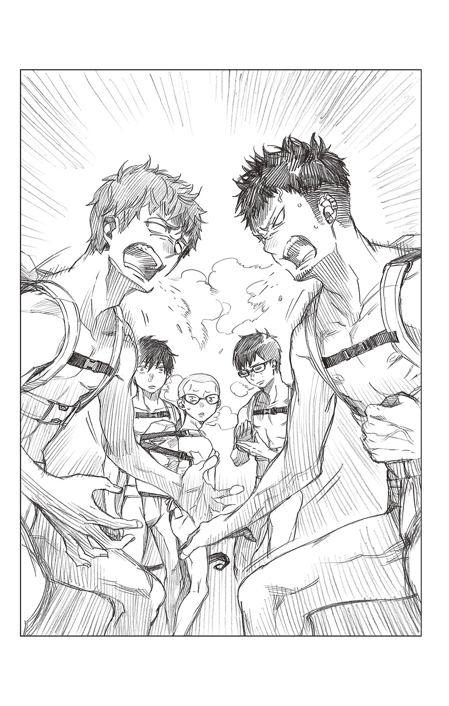
勝呂が瞬時にツッコミを入れる。雪男は無言で勝呂に拍手を送った。子猫丸は汚物を見るような眼差しを友へ向け、燐は現状がよくわかっていないようだ。
志摩がフッと笑う。いつになく、人の悪い笑い方だった。「そんなこと言うてええんですか？ 坊」
「なんやと？」
「そっちがその気なら、俺が支部長になった暁には、男子塾生＆男子講師全員、パンツ一丁になってもらいますよ？」
「「「「なっ......!?」」」」
これには、燐も含めた四人がぎょっとなる。
「なんだよ!? なにが悲しくて、パンイチにならなきゃなんねーんだよ!?」
「それだけやないで、奥村くん。俺よりモテるイケメンくんやリア充くんには、鼻メガネをかけてもらう予定や」そこで、志摩の目が思わせぶりに勝呂を捉える。「硬派気取ってるくせに、実は女の子からモテモテのスケコマシ坊主とか」
「いやに具体的やないか......」勝呂のこめかみがピクピクと動く。「誰のことや、それ」
「いかにも『僕は女の人には興味ありません』とかいう澄ました態度が、逆に女の子を群らがらせとる、ムッツリスケベ教師とか」
「それはもしかして、僕のことですか？」雪男が底冷えのする声で尋ねる。「まさかと思いますけど」
「『僕もよう参加せんわ。誘えるような女の子おらへんし』とか言うときながら、ちゃっかり美人の部長さんとフェスに参加しとる噓つき坊主とか」
「それ、まだ根に持ってたん？ 志摩さん」
子猫丸が呆れ顔でつぶやく。しかし、すぐにその両目を見開くと、悲鳴のような声をあげた。
「――し、志摩さん!? 何を......」
「!?」
ゾクリとするほどの殺気を覚えた雪男も、反射的に志摩を見やる。すると、いつの間に仕込んだのか、彼の右手に錫杖が握られていた。目尻が下がり気味の両目が冷たく嗤う。
「オン ショチソ キャロラハ ウンケン ソワカ」
「っ!! いけない!! 皆さん、避けてください!!」
雪男が叫ぶのとほぼ同時に、志摩が錫杖を宙で鋭く払った。「――夜魔徳くん、力を貸してや！」
「!! っ......!!」
放たれた巨大な黒い炎を、雪男、燐、勝呂、子猫丸の四人が懸命に避ける。
そこに、運悪く青息吐息でプールから這い上がってきた他の選手が、
「うおっ!?」「わっ!? わっ!?」「ひぃ!!」
いきなり明王級の黒い炎を向けられ、哀れ、極寒のプールへと再び落ちていく。
直後、あまりの冷たさに、この世のものとは思えない叫びがもれた。
「いや～、すんません。でも、妨害ＯＫいうルールなもんで。あんま恨まんといてください。ネ？」
テヘと舌を出して、志摩が無邪気に笑う。罪悪感はゼロだ。
そんな友の舐めきった態度に、勝呂がわなわなと震える。
「............志摩、お前......そこまで堕ちたか」
「フッ。女の子のスカートを膝上五十センチにするためなら、この志摩廉造、地獄の底まで堕ちてみせますわ」
威風堂々そう言うと、志摩がくるっと踵を返しダッシュした。「ほんじゃ、お先に～」
「待てや、ゴラァァァァァァァァァァァァァァ！！！！！！！！！」
もはや、本物の仁王と化した勝呂が、凄まじい速さで友に追いつき、その頭部を拳で殴りつける。――が、夜魔徳によって身体能力が向上した志摩は難なくそれを避けた。軽やかに宙で身をよじり、逆に勝呂の背負っている囀石に錫杖の尖端を打ちこむ。
「な......っ――」
「堪忍え。坊」
囀石が粉々に砕け散る。
直後、周囲にピーッと笛の音が響きわたった。
「ハイ。勝呂竜士くん、失格」
「!?」
メフィストが上空から明るく言う。「お疲れ様でした」
「はあ!? なんでですか......!?」勝呂が思わず理事長に嚙みつく。「俺は、まだ――」
「おや、勝呂くんともあろう人が、覚えてないんですか？ 囀石を落としたら、即失格ですよ」
「!! っ......ぐっ............クソ!!」
勝呂が唇を嚙みしめ、両手を参道に叩きつける。雪男を見ると深くうなだれた。
「............そういうわけです。ホンマ、すんません」
それから、残りの二人を見やり「後は、頼んだで」とうめくように言う。「あのバカ、止めたってくれ」
「坊......」
「おう、任せとけ！」
子猫丸は神妙な顔で肯き、燐は胸をドンと叩いて請け合った。
「行きましょう、三輪くん。兄さん、走って！」
雪男が両者を急き立て、走りだす。
だが、すぐにも長机に阻まれた。見れば、となりの机の前で志摩も足止めされている。
机の上には、バスケットボールほどの巨大なかき氷が幾つも置かれていた。
「第二ポイントは、ドカ盛かき氷です☆」とメフィストが満面の笑顔で告げる。「一人、一個完食しない限り先へは進めません。最初に選んだ品を変えるのもＮＧ。それから、ここでは食べている最中の妨害も禁止です。普通に食事のマナーに反しますから」
今更、お前に食事のマナー云々言われたくない。
心底うんざりする雪男の横で、兄が、
「まあ、いいじゃんか。これ食えばいいんだろ？」
と言い、あまつさえむしゃむしゃと食べ始めた。十秒後、「冷てえええええええーっ！！！！！！！！！！！」と叫んだ。
「うげー......頭がキンキンする。っぅー!!」
「..................兄さん」
雪男がひそかに舌打ちする。そんな食べ方をすれば、当然の結果だ。
（これは、胃に負荷をかけないよう気を配りつつも、ある程度の速度を維持して食べる必要があるな......なんにせよ、我に返ったら終わりだ。自分を騙し続けなければ――）
緻密な計算を巡らせた雪男が、氷の塊を一口、口へと運ぶ。
「――っ!!」
口に入れた途端、歯が軋むほどの冷たさが、もはや、痛みとなって脳天を突き抜けていった。覚悟はしていたが、想像以上にキツイ。
そんな代物を、志摩はすでに残り四分の一まで食べ進めている。恐るべき色欲だ。
「坊に後を頼まれたんや......」今までかき氷の前で固まっていた子猫丸が、突如決意に燃えた目でつぶやいた。「志摩さんは僕が追います！」
南無三、と叫んで、巨大な山のようなかき氷を一気に流しこむ。
「三輪くん!?」
「子猫丸、スゲー!! カッケェー！！！！」
目を瞠る雪男の横で、兄が両目をキラキラと輝かせる。
最後の一口をごくりと飲みこんだ子猫丸が、やり遂げた笑みをこちらへ向けようとした――その刹那、
「おぎゃああああああああああああああああああああああああああああああああああ――――――っっっっ！！！！！！！！！！！！」
凄まじい悲鳴と共に白目を剝いてその場に昏倒した。
「!? 三輪くん!!」「こ、子猫丸っ!?」
仰天した雪男と燐が、慌てて子猫丸を抱き起こす。子猫丸の顔色は、もはや、死人のそれだった。頭上からメフィストの無情な声が響く。
「ハーイ。三輪子猫丸くん、失格」
「なんだ!? どーしたんだよ!? なんで、かき氷食って失神すんだ!?」
狼狽する燐に「これは失礼」とメフィストがまったく悪いと思っていない声で告げた。
「三個に一個の割合で、いちごシロップじゃなくて、特製ソースがかかっているので、気をつけるよう注意するのを、うっかり忘れてしまいました。テヘ☆」
ウィンクをしながら、自分の頭をコツンと叩いて見せるおっさんに、燐が両の眉を吊り上げる。
「『テヘ☆』じゃねーよ!! なに、かわい子ぶってんだよ!? キメーんだよ!! てか、なんだよ、特製ソースって!?」
「ブートジョロキアから作らせたメフィスト印の特製激辛ソースです」
ブートジョロキアといえば、世界一辛いと言われている唐辛子だ。普通の唐辛子の約八百倍辛いと言われている。
（それを、一気に――......）
雪男はぞっとする一方、子猫丸に深く同情した。
口惜しくも散っていった友の無念を晴らすため、身内の恥をそそぐため、女生徒と一部男性陣を理不尽な恥辱から守るため、彼は普段なら決して取らないであろう無謀な行動に出た。その結果、志半ばに倒れたとして、一体、誰が彼を責められよう......。
「三輪くん、君の勇気は忘れません」
「――――雪男、早く食っちまおうぜ」
そう言って立ち上がった兄の目には、強い光があった。
「俺たちで、なんとしてでも志摩を止めるぞ」
無言で肯く雪男の目に、ふと、兄のかき氷が映った。
さっきまでとは、何かが微妙に――だが、決定的に違う。その違和感に気づいた雪男が、
「兄さん、ダメだ!! 食べるな!!」
「へ!?」
ぎょっとする兄の手からスプーンを叩き落とす。
「な、なんだよ？ 雪男」
「............」
さきほど、兄が何口か食べたはずのかき氷が、どういうわけか元に戻っている。雪男がメガネの奥で片目を眇める。
「これは――」
「言わずもがな。ブートジョロキア味のかき氷ですわ」
いつの間にか、志摩が彼らの前に立っていた。
どうやら自分の分は平らげたらしく、死人のような唇をしていたが、なおも余裕の笑みを浮かべている。
「!? だけど、俺がさっき食べた時は、甘いイチゴ味だったぞ!?」
燐の疑問に、志摩がへらりと笑う。
「二人が子猫さんに気を取られている隙に、すり替えたんですわ。たまたま、近くにある激辛ソースが一つだけで、奥村くんの分だけしかできんかったけど」
「すり替えたって――」
真偽を問うべくメフィストへ視線を向ける。彼はニヤニヤ嗤っているだけで、なにも言わない。つまりは、食べている時の妨害ではないから、違反にならないということだろう。
雪男が臍を嚙む。「......随分と卑劣な真似をするんですね」
「まあ、これでも、一応スパイですんで」
臆面もなくそう言ってのけると、んじゃ、お先にと、志摩がその場を後にする。燐が口惜しげに地団駄を踏んだ。
「クソ。志摩の野郎ッ!!」
「とにかく、兄さん。早く、別のと替えて――」
雪男が手を伸ばした途端、ピッ・ピッ・ピー、と殊更憎たらしく笛が鳴った。
「最初に選んだやつを変えたら失格ですよ？」
「選んでねーし!! 志摩のバカがすり替えたんだよ!!」
「ふむ。ですが、食べていない時の妨害は許可しているわけですから、それは理由にはなりませんな」
メフィストが冷たく頭を振る。
畜生、と叫んだ燐が、すぐさま気持ちを切り替え、かき氷に向き直る。根性で二口、三口と食べ続けたものの、十口目には、すでに死人のような顔色になっていた。
「兄さん......」
「大丈夫だって。これぐれえ、なんでもねーよ」
青ざめた顔で、弟を安心させるように笑う。幼い頃からよく見てきたその顔に、雪男が眉をひそめる。
兄には昔から、変に強がる癖があった。
そんな兄の笑顔に自分でも戸惑うほどの苛立ちを覚える。
「――いや、ダメだ」雪男は低い声でそう言うと、自分の前にある器と兄のそれを取り換えた。
「相手が食べていない時の妨害行為なら、容認されるんでしたよね？」
「私にはそれが妨害とはとても思えませんが？ 奥村先生」
ひどくゆったりと小首を捻ってみせるメフィストに、雪男が平然と答える。
「兄はすでに、かなり食べていましたから。僕より優位だと判断したわけです」
「でも、それ半端なく激辛ですよ？ それでも、優位になるんですか？」
「甘いものは苦手ですから」
「ふむ」メフィストは含み笑いを浮かべると「――まあ、いいでしょう」と言った。その両目が、長い前髪の下でおかしげに細められる。
「代わりに貴方が全部食べきるという条件で、ですが」
「もちろん、食べますよ」
「！ おま......なに言ってんだよ!? それは、俺が食うに決まってんだろ!? 弟のくせにカッコつけてんじゃねーよ!!」
ようやく弟の意図が理解できた燐が、半ば怒ったような口調でそれを拒絶する。だが、雪男はどこまでも冷ややかに兄を見やった。
「夜魔徳の力で身体能力が劇的に跳ね上がった志摩くんとやり合えるのは、兄さんだけだ。冷静に考えろ」
「雪男......」
燐が困惑した顔で、しかし、ぐっと奥歯を嚙みしめる。その後、わかった、とうめくと、一口だけ手がつけられた弟の分のかき氷を一気に平らげた。
そのまま、志摩の後を追って駆けだす。
その際に、ひどくシリアスな声音でぼそりとつぶやいた。
「死ぬなよ、雪男」
「死ぬわけないだろう」
鬱陶しげに嘆息した雪男が兄を見送ることさえせず、激辛かき氷に視線を移した。一匙、口へと運ぶ。
その尋常ならぬ辛さに堪らず咳きこんでいると、やる気のない拍手が聞こえてきた。
「いやあ、感動しましたよ。貴方がたの麗しき兄弟愛に。ククク」
「............」
悪魔の乾いた賛辞を受け、雪男の顔があからさまに歪んだ。
「貴方のようなやさしい弟を持って、彼は幸せだ」
思わずもれそうになる舌打ちをどうにか飲みこむ。
「......べつに、兄を庇ったわけじゃない。合理的に考え、より勝率の高い兄を先に行かせたまでです。セクハラは許せませんし、僕自身、褌一丁に鼻メガネなんて、絶対にゴメンですから」
吐き捨てるような雪男の言葉に、メフィストはただおかしげに嗤っただけだった。
苛立ちを堪えた雪男が、ブートジョロキア味のかき氷を黙々と食べていると、メフィストが「おや？」とつぶやいた。
「どうやら、後続の選手が来たみたいですよ」
「え......――――」
眉をひそめつつ振り返った雪男が、ぎょっと両目を見開く。どうして、とつぶやいた声が、観客の歓声に搔き消えた。
豪快にかき氷を流しこんだその人物は、先に行った二人を追って猛然と走りだした......。
（は？ 奥村くん？ 先生やのうて？ まさか、アレを食ったんか!?）
自分を追ってきているのが、奥村ツインズの弟ではなく兄であることに、志摩は一瞬、戸惑いを隠せなかったが、逆に『これは、チャンスや』と開き直った。
確かに、兄の底知れぬスタミナと運動能力は厄介だが、弟よりはずっと御しやすい。
志摩は最後の石段の前で立ち止まると、自分を追ってきた奥村燐を、わざと大仰に迎えた。「よう追いついたなぁ、奥村くん。さすがやわ」
肩で息をした燐が、それでもなお、強い眼差しを向けてくる。
「お前の好きにはさせねーぜ、志摩」
「なあ、奥村くん。ここはフェアに勝負せん？」そう言うと、志摩は二心はないというように、両手を広げてひらひらと振ってみせた。「ここで俺らが戦ったら、危ないやろ？ せやから、正々堂々、脚力だけで勝負しよう言うことや」
「正々堂々？ 誰がだ？ お前がか？」
「アハハ。その言い方キツイで、奥村くん。志摩さん地味に傷つくわ～」
明るく笑う志摩を心底胡散臭げに見つめていた燐が、しかし「いいぜ」と肯く。
「俺はアイツらの屍を越えてここまで来たんだ。絶対、お前には負けねえ」
「大袈裟やなぁ～。三人とも、死んでへんし。まあ、ええわ。勝っても負けても恨みっこなし、いうことで。ええね？ 奥村くん」
「おう」
「ほな、行くで？ よーい――」
ドンの合図で、両者が同時に地を蹴る。
今や関取級にまで重くなっている囀石を背負い、志摩はもはや、煩悩だけで石段を駆け上がった。
彼の左側を行く燐には、未だに余裕がある。三倍近い大きさの囀石を背負っているはずなのに、この体力はどこからくるのか？
（ホンマ、奥村くんは体力宇宙やわ。けどな――）
やはり、馬鹿正直だ。
志摩の提案を鵜吞みにし、まったく妨害してくる様子がない。
正々堂々、脚力だけで勝負するつもりなのだ。
（その甘さが命取りや！ この勝負、俺の勝ちやで!!）
唇の端でにいっと嗤った志摩が、リュックに忍ばせたバナナの皮を敵の足元へと投げる。前方だけを見ていた燐が、まんまとそれを踏みつけた。
「!! うお......っ!?」
コントのように、つるりと足を滑らせた燐が、石段を転がり落ちていく。「っ――志摩ァ―――っ この野郎―――――――！！！！！！！」
「堪忍やで......奥村くん」
友の怒声に背を向け、志摩がそっと涙を拭う真似をする。もちろん、涙など一滴たりとも流れていない。
そして、敵のいなくなった石段を足取りも軽やかに上っていく。
ようやく社が見えた。
あと、ちょっと――あと、ちょっとで、ゴールの鈴緒に手が届く!! 即ち――。
（出雲ちゃんの......杜山さんのパンツが見られるんやああああああ！！！！！！！！）
夢見心地の表情になった志摩が、うっとりと赤い鈴緒に手を伸ばす。
その指が鈴緒をつかむ......直前、背中に凄まじい殺気がかかった。
「〝蛇を断つ〟」
「!? へっ――――」
「霧隠流魔剣技 蛇腹化 蛇牙」
「!?」
鋭い風圧と共に志摩の背負っていた囀石が砕け散る。ピーッとホイッスルが鳴った。
「志摩廉造くん、失格～」
「な......なん............!? ぐえ!!」
呆然とする志摩の頭をぎゅむっと踏んづけ、
「――悪く思うなよ、志摩。」
艶やかに笑った霧隠シュラの手によって、大きく鈴緒が振られた。
涼やかな鈴の音と共に、志摩廉造――その下卑た野望が、脆くも崩れ去っていった。
「――結局、三日支部長になって領収書を処理することにしたんですね」
「そーゆーこと」
さらしの上に法被を羽織り、真っ白な短パンを穿いたシュラが満足げに笑う。その肩からは『正十字騎士團日本支部支部長』の襷がかけられている。
「これで、当面の財政危機は回避したぜ。ニシシシ」
「ホント、悪知恵だけは働きますね」
雪男は激辛かき氷で痛む唇を片手で覆い、嘆息した。ともかく、女子生徒へのセクハラ及び、一部男性陣への理不尽な嫌がらせが未然に防がれたのだから、よしとすべきか――。
哀れ志摩廉造は、成就寸前に野望が潰えたショックで倒れたままだ。
他の面子はしえみと出雲、そして朴の三人が作ってくれたお汁粉で暖を取っていた。
「うめー!! 全然、苦くねえ!! しえみが作ってんのに、草が入ってねえぞ、コレ!?」
かなり失礼な感嘆の言葉を吐く燐に、
「......朴が来てくれたからね」
と声を落とした出雲がやや疲れた顔で言う。「私だけじゃ止められなかったわ」
もう少しで、草入りのお汁粉になるとこだったとつぶやく出雲に、しえみの料理の破壊力を知っている燐がぶるりと震える。
「サンキューな、朴」
「ううん。私のほうこそ、皆の頑張る姿が見られて楽しかったよ」
「そっか。なあ、コレもっとねえ？」
「はあ？ アンタ、まだ食べる気？」
出雲が露骨に嫌そうな顔になるも、
「だって、うめーじゃん。留守番しているクロにも持って帰ってやりてーし」
「....................................タッパーあるわよ」
「ほっとする味やな」
「ホンマですねぇ......痛っ」
友のつぶやきに、激辛かき氷で腫れた唇を押さえながら子猫丸が同意する。その横では、
「沢山作ったから、皆もいっぱい食べてね。あ、まだ、おかわりあるよ？」
「ハイ☆ では、私大盛おかわり、つけ合わせの塩昆布多めで」
お玉を持ったままニコニコと微笑む割烹着姿のしえみに、メフィストが空になった椀をずいっと差し出している。
（諸悪の根元が、なにをちゃっかり混じっているんだ......）
再び嘆息する雪男をシュラが肘で突いた。
「お前も食ってこいよ。戦いの後のああいう、おふざけタイムが楽しいんだろ？」
「別に、戦ってませんし」
僕は遠慮します、と言いかけた雪男に、
「支・部・長・命・令」
とシュラが襷を見せつける。「行ってこいよ。雪男」
「......――」
皆のほうを見ると、こちらに気づいた兄としえみが、笑顔で大きく手を振ってきた。
「雪男ー!! 早く来いよ!! うめーぞ」「雪ちゃーん」
二人の声が合わさる。
もう一度、大きくため息を吐いた雪男が、手を差し伸べ、まるでダンスか何かのようにシュラを誘う。
「――じゃあ、一緒に行きますか？」
「!!」
シュラはちょっと驚いたような顔をしたが、やがてフンと鼻で笑うと、差し出された手のひらをペシッと叩いた。ビビリメガネのくせに、生意気だというように......。
「じゃあ、ちょっくら食いにいくか」
「太りますよ」
「てめえ......自分から誘っといてなんだよ、その言い草!? 支部長権限で給料減らすぞ」
「まさかの脅しですか？ 大人げない」
「てめーが、じじむさいんだよ。このフケ顔高校生!!」
相変わらずのやりとりを上司と交わしながら、連れ立って皆の元へと歩いていく。
いつの間にか、吹きつける風の寒さも気にならなくなっていた。
こんな時間も、たまには悪くないのかもしれない......。そんなふうに思ったことは、自分一人の胸の中に留めておこう。雪男はそっと口元だけで微笑んだ。
幼い頃、沢山の兄弟に囲まれた友を羨ましいと思ったことがあった。
――志摩さんはええなあ。柔造さんとか、金造さんとか、弓ちゃんとか、皆おって。
そんな時は決まって、切ないような痛みに鼻の奥がつんとなった。
なのに、二言目には『うっとうしい』『メンドー』としか言わない友人が、ほんの少し憎らしかった。
祓魔塾からの帰り道――。
学生寮までの道のりを、志摩はいつものようにダラダラと歩いていた。それこそ、生まれた頃からのつき合いだが、彼がピシッとしている姿を――女性関連以外で――子猫丸は見たことがない。
「あー、今日も疲れたぁ～。ホンマ、勉強しんどー」
「志摩さん、それ毎日言うとるで」
「そやかて、子猫さん。言いたくもなりますわ。見て、この宿題の山」
トホホ......と半泣きになった志摩が、これ見よがしにプリントの束を取り出す。確かに分厚い。うんざりするほど分厚い。
だが、子猫丸は、その半分近くが友の自業自得であることを知っていた。補習をサボったり、授業中に居眠りをしたり、レポートの提出期限を守らなかったり、テストで赤点を取ったりしたために追加されたものにまで同情するほど、お人好しではない。
「あー、毎日、楽して生きていけへんかなぁ～」
「......志摩さんって、ホンマ、キリギリスみたいな人やな」
子供の頃に読んでもらった『アリとキリギリス』を思い出しながら、子猫丸がげんなりする。しかも、このキリギリスは大人しく死んだりなど決してしないだろう。
「坊なんて、図書館の自習室でまだ勉強しとるで？ しらべものにも都合がええし、部屋より落ち着く言うて」
子猫丸がため息混じりにそう言うと、志摩は大袈裟に身をよじってみせた。
「アレはヘンタイや！ ヘンタイ!! ストイックもあそこまでいくとさすがにホンマもんのヘンタイやろ。気持ち悪いわ」
「......それ、間違うても、柔造さんとか金造さんの前で言わんほうがええで」
子猫丸がもう一度、深く息を吐く。
「なあ、志摩さん。認定試験もそう遠い未来の話やないんやし、少しは真面目に頑張らはったらどないや？ 落ちたら、柔造さんに大目玉喰らうで？」
志摩家の次男である柔造は、二十五歳の熱血漢。騎士と詠唱騎士の称号を持つ、上二級祓魔師で、若くして京都出張所祓魔一番隊の隊長を務める実力者だ。学生時代から優秀だったと聞く。
一方、この末弟はといえば......。
「なんとかなるやろ？ 子猫さんは心配症やなぁ～」
ヘラヘラ笑う友を前に、あ、この人、やる気ゼロやな、と子猫丸が冷ややかな眼差しを向ける。
「志摩さんが、考えなしなだけやろ」
「ヒドイ、子猫さん！ だって、あの金兄だって騎士と詠唱騎士に受かったんですよ？ あのドアホが」
「............」
志摩が痛いところを突いてくる。
確かに、彼の四兄である金造は、次兄と異なり、頭がよいほうではない。
平和と英語で書こうとして、堂々と『ＰＡＣＥ』と書くような二十歳だ。どちらかといえば（いわなくても）悪いほうだろう。だが、実はこの間違えた綴り――イタリア語で『パーチェ』と発音され〝平和〟を表す単語なのだ。
彼、金造にはそういう一種、神懸かりといおうか、多分にミラクルなところがある。
子猫丸はわずかに逡巡すると、
「志摩さんは金造さんほど強運やないし、少しは将来とか真面目に考えはったほうがええと思うで？」
「......子猫さん......ソレ、普通に凹むんやけど」
大袈裟に傷ついたふうを装う志摩が、グスンと鼻を啜る。
しかし、その舌の根も乾かぬうちに、ハッと目を見開いた。
「今日は『ロ大王』発売日やんか!!」
「............」
「メシ食ったら、買いにいかな。あ～、売り切れてへんといいな～。『ロ大王』人気やからなぁ～。『ロ大王』のグラビアは毎回、神やもんなぁ～♥」
途端に足取りが軽やかになった志摩が、スキップしながら正十字学園男子寮・新館へと入っていく。
子猫丸は心持ち友との距離を開けてそれに続いた。
金持ちの子息たちのために作られたこの寮は、学生寮とは思えぬほど凝った造りで、内装も手がこんでいる。――とはいえ、無駄に華美なわけではなく、学生が落ち着いて暮らせるように様々な趣向が凝らされており、居心地はかなりいい。
「あ～、このドアを開けたら、可愛い女の子が待ってたらええのにな～♥」
自室のドアノブに手をかけた志摩が、またもろくでもない妄想を垂れ流す。
「出雲ちゃんとか、杜山さんとか、朴ちゃんとか～♥」
「......志摩さん。せめて、一人に絞ってや」
しまりのない顔でドアを開ける友に、無駄だと思いつつも苦言を呈す――と、志摩がその場に凍りついた。
約十秒後、せっかく開けた扉をまたバタンと閉める。そのまま石のように動かなくなってしまった。
「志摩さん？」
「............おる」
「は？」
「おるんや......中に」
友の挙動不審な態度に眉をひそめた子猫丸が「おるて、何が？」と尋ねる。
「......ヤ......ヤツや......」青ざめた顔で志摩が答える。「ヤツがおる」
「？ ああ、ゴキブリのことやな？ ホンマに......志摩さんは、もう」
呆れた子猫丸が、慣れた動作で友をドアの前からどかせる。
扉を開け、
「えっと......確か、新聞紙を丸めたやつがここら辺に――」
と出入り口付近に置いてある、簡易武器を探す。しかし、待ち受けていたのはゴキブリではなかった。
「――よっ、子猫」
「............」
志摩のベッドで音楽雑誌を読んでいた男が、こちらに気づいて片手を上げた。子猫丸が目を丸くする。
「金造さ......ん？」
「おう。コラ子猫、廉造ォ。お前らちゃんと坊をお守りしとったんやろうな？ ア？」
やや長めの金髪の下で、切れ長の両目が糸のように細くなる。
幼い頃から、顔を合わせるたびに言われてきた言葉をかけてきたその男は、さきほどの会話にも出てきた志摩家不肖の四男坊――京都出張所にいるはずの志摩金造――その人であった。
「柔造さんと喧嘩した？ 金造さんが？」
「はあ？ 噓やろ？」
金造から話を聞いた子猫丸と志摩は、そろって妙な顔になった。
金造は確かに喧嘩っ早く、その兄である柔造も意外に短気だ。だが、金造は次兄を心から慕っているし、明陀の戦士として深く尊敬もしている。だからこそ信じられなかったのだが、
「明陀の男は噓なんぞ吐かんのじゃ、このボケナスがアァァァァ」
と怒鳴った金造の飛び蹴りが、哀れな末弟に炸裂する。志摩が「痛いわ!!」と叫ぶ。
「久しぶりに会った弟に、何すんねん!?」
「ア？ 兄弟のスキンシップや。普通やろ」
「どこが、普通!? どんだけ殺伐とした兄弟やねん!! てか、噓吐いたことないいうのがまず噓やろ!! どんだけ俺に噓吐いてきたと思ってんねん!? 俺、金兄のせいでメンマをずっと、割り箸の煮こんだヤツやと思ってきたんやで!?」
「はあ？ なんや、ソレ。アホか、お前」
「自分の犯行を忘れるなや このドアホ!! お前がアホやろ!!」
憤慨する弟を無視し、金造が子猫丸に向き直る。
「――ま、そんなわけや。しばらく、ここに厄介になるで」
「は？ 金造さん、家出してきたん？」
思わずぎょっとする。
しかし、よくよく見れば、ベッド脇に巨大な登山用リュックが置いてあった。愛用の津軽三味線が入った長袋まで持ってきているあたり、彼の本気度が窺える。
もはや、この部屋に居座る気満々だ。
「腹減ったな。なんか、食いに行くか？」
「え......あ、いや」
子猫丸が戸惑っていると、志摩が猛然と兄に食ってかかった。
「なに勝手に言っとんのや!? 家出ってなんやねん？ しばらく厄介になる？ アカンに決まっとるやろ!? さっさと柔兄に手えついて謝って、とっととウチに帰れや!!」
「チェアアッ!!」
「痛いぃぃぃぃ......っ！！！！！！！！！！」
脳天に強烈な手刀を浴びせられ、両手で頭を覆った友が絶叫する。「なにすんねん!? バカになったらどないすんの!?」
「知るか、ボケが。お前が弟の分際で、生意気なこと言うから悪いんやろ」
頭を抱えて抗議する弟と、それを一顧だにしない兄をハラハラと見守っていた子猫丸が、
「......とにかく、僕は坊に相談してきますさかい――」
と、その場に立ち上がる。そのまま、そそくさと出口に向かおうとすると、
「ちょい、待ち」
「ぐぇ!!」
背後から伸びてきた腕に襟首をつかまれ、無理やり引き戻される。
思いっきり首が締まった子猫丸が、激しく咳きこんでいると、金造の顔のどアップが迫ってきた。
「この件、坊には知らせんといてほしいんや」
と、いつになく真剣な声と顔で言う。子猫丸が咳きこみながら片眉を上げる。「え？ ゴホ、ゲホゴホ......なんで......ゴホゴホ？」
「坊は今、大事な時期やろ？」
三か月後に迫った認定試験で、竜騎士と詠唱騎士、両方の称号を一度に取ると張りきっているのだ。
自分のことなんぞで心配をかけたくない、という。
その気持ちはよくわかる。子猫丸とて同じ想いだ。彼の負担になるようなことはしたくない。
しかし、現実問題としてこの人の存在を隠すことができるだろうか？
「でも......ゲホ、金造さん。ここに......ゴホゴホ......いてはるんやないんですか？」
「そうや。せやから、お前らには、俺はたまたま休みが取れてここに遊びにきたとかなんとか、そんな感じで坊に伝えてほしいんや」
「ああ、そういうことやったら――」
ようやく咳が収まった子猫丸が、得心した顔で肯く。――と、ドアのところでガタンと音がした。見ると、バツが悪そうな顔で勝呂が立っている。
あたかも悪さが見つかった子供のように、金造がビクッと身体を強張らせる。
「坊......」
「......すまん。全部、聞いてもうたわ。ドアが開いとったんで......立ち聞きする気はなかったんやけど」
頭の後ろを搔きつつ告げる勝呂に、金造が悄然とうなだれた。
「お騒がせして、ホンマ申し訳ありません」
と頭を下げる。
「柔造と何があったんや？」
「............すんません」
「俺らにも、言えんいうことか」
「............」
無言で頭を下げ続ける金造に、勝呂が嘆息する。
「そない大事なんか？」
「........................――坊が迷惑やったら、俺、出ていきます」
「迷惑に決まっとるやろ!!」
即答したのは――しかし、勝呂ではない。いつになく両目を吊り上げた志摩が、兄に人さし指を突きつけ、声高に叫ぶ。
「迷惑も迷惑。迷惑千番！ 大迷惑や!! そやから、さっさと出ていきや!! しっしっ!! ほら、坊もビシッと言うたってください！ ビシッと!!」
「黙りゃあ」
「ぎいゃあああああああああああああああああああ」
ビシッという鋭い音と共に、再び兄の脳天チョップが炸裂する。
子猫丸は床の上を転げまわる友と、その兄を見やり、最後に勝呂を見た。
「......坊。どないします？」
「どないするもなにも、しかたないやろ」
こないな時間に叩き出すわけにもいかんし、と勝呂が苦い顔で言う。「ともかく、今日はここに泊まらせて、どうするかは、明日、考えようや――」
「そうですね」
子猫丸もこくりと同意を示す。
顔を輝かせた金造が「ありがとうございます!!」と叩頭し、志摩一人が、盛大なブーイングをもらした......。
その日の晩は、『ぽんちゃん』を予約し、もんじゃとラムネの夕飯を囲んだ。その後、当たり前のような顔で寮の大浴場に浸かった金造は、これまた当然の如く弟のベッドを占領した。
「何してんねん。それは俺のベッドやで？」
「俺がここで寝るから、お前は床で寝ろ」
「ハァ!? 金兄が床で寝たらええやろ!? そこは俺のベッドやで!?」
とわめく志摩を暴力で黙らせ、
「お前のもんは俺のものやろ!!」
と傲岸に言い放つ。挙句、
「あー、なんや、腹減ったなあ。オイ、廉造。五秒やるから、コロッケパンとカップ麵買って来いや」
と弟を顎で使う。
「五秒で行けるか！」「このドアホ!!」「とんだ暴君や」「おとんに言いつけたる」「チンピラ」「早よ、出てってや!!」
と、さんざわめき散らした志摩が出ていってしまうと、室内は急に静かになった。
金造は黙っていると異様に迫力がある。見事なばかりの金髪に目つきも鋭く、ぶっちゃけ強面だ。だが、幼い頃から兄弟同然に育った子猫丸は、彼を怖いとは思わない。
やさしいところもあるし、漢気もある。家族が大好きで、明陀の男であることを誇りに思っている人だ。愚直なまでに明陀を愛するその姿勢を子猫丸は密かに尊敬していた。
これで、意外と弟想いのところもある――......のだと思いたい。
少なくとも子猫丸にとっての彼は乱暴だがやさしく、短気だが頼もしい兄だった。笑顔が子供のように無邪気で、いつだってその背中に自分たちを守ってくれていた。
「......なあ、金造さん」
机に向かって課題のレポートを書きながら呼びかけると、
「――なんや」
ちょっとおいて、低い声が返ってきた。
寮は二人部屋だが、互いのスペースの間には、各人の机と大きな本棚があり、子猫丸の位置から、志摩のベッドに寝転がっている金造の顔は見えない。
「なんで喧嘩したん？ 柔造さんと」
「......なんでもや」
金造がボソリと答える。
普段が竹を割ったような性格の彼なだけに、そんなふうに言葉を濁されると、かえって心配になってくる。
「仲直りできへんの？」
「............」
答えの代わりに、無言で雑誌をめくる音が聞こえてきた。
気まずさを隠すためにそうしているようで、ますます不安になる。いっそ、無理や、と一蹴されたほうが気が楽だった。
（金造さん......元気そうに見えるけど、ホンマはすごく悩んどるんやろか）
子猫丸がレポートを書く手を止める。
僕は、と躊躇いながら口にする。
「僕だけやのうて、坊や志摩さんもそうやと思うけど、金造さんも柔造さんも大好きやから、二人が仲悪うしてるんは嫌や」
「............」
しかし、答えはなかった。
今度は雑誌をめくる音すら聞こえない。
「――金造さん？」
心配になった子猫丸が、本棚の脇からこそっととなりのスペースをのぞく。
恐る恐る友のベッドを見ると、いつの間に眠りこけたのか、金造は大きな口を開けて爆睡していた。
「............」
「ぐー......ふがー......ぐぅぐぅ」
実に心地よさそうな寝息かつ、安らかな寝顔だった。
（......あ、やっぱりコレ、大したことやあらへんわ）
一瞬にして無表情になった子猫丸が、胸の中で前言撤回する。
幼馴染の志摩にしてもそうなのだが、この兄弟はマイペースといおうか、唯我独尊といおうか。本気で心配したほうが負けというところがある。
明日には、あっけらかんと京都へ戻ると言いだすかもしれない。
（まあ、そんならそれでええんやけど）
子猫丸は苦笑すると、レポートの続きに戻った。
ふと、幼い頃、自分たちの勉強を見てくれた柔造の笑顔が頭を過った。あくまで善意からではあるが、結果邪魔ばかりしてくれた金造の顔も――。
（早く、二人が仲直りしてくれるとええなぁ......）
ため息混じりに思う。
その晩は、ひどく懐かしい夢ばかり見た気がする。
――翌日の昼休み。
芝生で昼飯を食べながら、子猫丸が昨夜の寝落ちのことを話すと、勝呂が「金造らしいわ」と答えた。
当の金造は、末の弟を僕に、かつて通っていた学園を懐かしそうに見てまわっている。
しかも、どういうわけか、行く先々で女生徒たちの熱い視線を集めるのだ。（『えー、志摩くん、誰ダレ？』『えー、お兄さん？ ウソ!! カッコイイ～』『マジ、イケメンじゃん!?』『あのぉ～、お兄さんってえ、彼女とかいますかぁ？』）
子猫丸としては友がいつ爆発するか心配でならず、勝呂とともに早々にその場を離れたわけであるが......。
「まあ、金造さんは男前ですからね」
「顔の造りはだいたい同じやのに、志摩の場合、絶望的にしまりがないからな」
勝呂が手厳しい一言を、ここにいない友へ放つ。
子猫丸は「アハハ」と苦笑いしつつ、それにしても、と話題を変えた。
「二人の喧嘩の原因って、なんなんですかね？」
「ああ。俺も気になって、あれから柔造に電話してみたんやけどな......」
「まさか、坊。柔造さんに、金造さんがここにいるって話したんですか？」
「いや。約束があるしな。急に金造に聞きたいことができた言うて、誤魔化したわ――」
さぞや機嫌が悪かろうと思っていた柔造は、まったくもって普段通りだった。〝坊〟の前だから取り繕っているというふうでもなく、いたって通常運転。あくまで爽やかに、あっけらかんとしていたという。
『すんません、坊。金造、おらんのですわ。俺では代わりになりませんか？』
『悪いな。アイツでないとわからんことや。なんや、アイツ、どないしたんや？ こないな時間に、まだ出歩いとるんか？』
『それが......なんや、わけわからんことをわめき散らした思うたら、そのまま出てってしもうて......まだ帰っとらんのです。任務のほうは、有給を使っとるみたいなんですが、アイツにも困ったもんですわ』
『喧嘩でもしたんか？』
『いいえ。何もありません。そのうち、腹が空けば帰ってくるでしょう』
そう言って、吞気に笑っていたそうだ。
少なくとも、彼のほうは金造と喧嘩したつもりもなければ、それが原因で金造が家出したなど夢にも思っていない様子だった。いっそ切なくなるほどに、両者の温度差が激しい。
「せやから喧嘩言うても、しょせんは金造の独り相撲なんやないかと思うたんやけど......まあ、それじゃあ、いくらアイツでも納得せんやろうし、なんや思い当たることがないか、無理やり聞き出したら――」
電話口の向こうで頭を捻らせていた柔造が、
『そういえば、前の日の昼飯が冷や麦だったんです』
と言いだしたという。無論、勝呂は受話器のこちらで首を傾げた。
『そんで、うっかり色つきのを食べてもうたんですわ』
『は？ なんて？ 何を食べたんやて？』
『一把につき何本か、赤や緑の色がついたカラフルな麵が入ってますやろ？』
『あー、なんかあるな』
一応、肯きつつも、なんのこっちゃと思って聞いていると、
『金造の奴。昔から、どういうわけかアレが好きなんですわ。これは赤いから血でできた麵や、緑のはアメーバや!! ロック魂や!! とかなんとか言うて』
『血でできた麵って、なんかイヤやな......しかも、アメーバのどこがロックなんや？』
『アハハハ。ホンマですわ。そないアホなことをまことしやかに言うせいか、他のチビどもは皆食べたがらんので、冷や麦を茹でる時は、必ずアイツにやっとったんです』
『............』
そこまで聞いても、やっぱりなんのこっちゃとしか思えなかった。
『もう子供やないし、あんなもん拘らんやろ思うて――というか、そもそもすっかり忘れとりました』
柔造はそう言うと、快活に笑った。
考えられるのはそれぐらいだという。
「――と、いうわけや。子猫。お前、どない思う？」
「まさか」子猫丸は即座に否定すると、歯の痛みでも堪えるような顔で、まさか、ともう一度言った。思わず目が泳いだ。
「いくら金造さんかて、そないしょーもないことで......」
「俺もそう思う......いや、そう思いたい。だが、柔造が思いつくんがそれしかないんやったら、しかたないやろ」
勝呂が焼きそばパンを手に、神妙に告げる。心なしか食欲が失せたようだ。げんなりした顔でパンの断面を見つめる。
「食いものの恨みは怖い言うしな」
「......はい」
「それにしても、赤い冷や麦とはな......」
子猫丸も胸やけを覚え、食べかけのおにぎりを脇に置いた。
二十歳を超えた大の男の家出の理由としては、あまりにも情けない。そして、アホらしすぎる。
（志摩さん......激怒するやろな）
ベッドを盗られ、暴力を振るわれ、パシリに使われ、果ては、自分よりも女性にモテる姿を（わざとではないにしても）見せつけられ――金造が来たことで一番実害を被っているのは、他ならぬ彼だ。
挙句、その理由がこんなどうでもいいことだと知ったら......。
子猫丸は今、ここにいない友の胸中を慮り、胸の中でそっと手を合わせた。
「ちょ......一体、なんなんですか？ 坊」
「ええから」
その日の夕刻――。
塾を終えた勝呂と子猫丸は、正十字学園男子寮・旧館へと金造を連れ出した。当初は面倒臭がっていた志摩もしぶしぶといった感じでついてきた。
「？ なんや......ここ。廃屋？ 肝試しでもやるんですか？」
「廃屋やない。一応、男子寮や。古いほうのやけどな」
新館が建てられてから、ここは使われていない。
ただ、それはあくまで表向きのことで、彼らの友人である奥村兄弟は現在もここで生活している。言わずもがな、サタンの落胤である兄・奥村燐を一般生徒から隔離するためだ。
家鳴りのする廊下を歩き、厨房へ向かう。厨房には、燐の姿があった。エプロン姿で大きな寸胴鍋を菜箸で搔き混ぜている。
こちらに気づくと、菜箸を持ったまま、軽く片手を上げてみせた。
「よう。頼まれたから一応作っといたけど、なんなんだ、これ？」
そう尋ねてきた後で、「アレ？ 志摩の兄ちゃんじゃねーか」と小首を傾げた。
「遊びに来たのか？」
「話せば長くなるんやけど......いや、そんなに長くもないんやけど、ひとまず、ありがとう。奥村くん」
と、子猫丸が頭を下げる。
そして、近くのテーブルに金造を座らせた。
「オイ、子猫。ホンマ、何が始まるんや？」
「まあ、まあ。金造さん」
「ホラよ。お待ち」
そこに、燐が目にも涼やかな硝子の器を持ってきた。氷がゆらゆらと揺れる冷水に浮かんでいるのは、すべて赤い冷や麦だった。
「これは......」
金造が呆然とそれを見つめる。「赤い――」
勝呂がコホンと空咳を一つする。
「冷や麦の赤い麵だけを集めたもんや」
「全部、金造さんが食べてええんやで？」
子猫丸が笑顔で箸をわたす。
「............」
金造は一応箸を受け取りはしたものの、喜ぶどころか、なんともいえぬ顔をしている。
感動しているふうではない。戸惑っているというより、本気でわけがわからない、という感じだ。
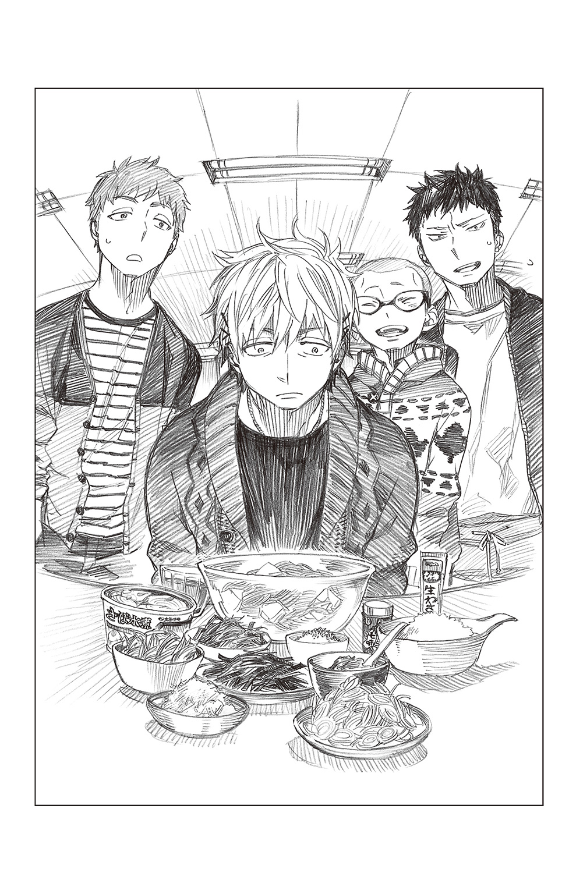
そんな金造の様子に、勝呂と子猫丸が顔を見合わせ、
（違うんやないか？）
（僕もそないな気がします......）
素早くアイコンタクトを交わしていると、空気を読まない志摩が兄から箸を取り上げ、すくい上げた麵を無理やり金造の口に持っていった。容赦なく、ぐいぐいと押しつける。
「これが食いたかったんやろ？ そんで、柔兄と喧嘩したんやろ？ ほな、さっさと食って、とっとと京都に帰ってや？ ネ？ ほら、一気にずずーっといったって？ な？」
「し、志摩さん。そこらへんでやめたほうが――」
子猫丸が慌てて止めるも、
「......っ廉造オォォォォォォォォ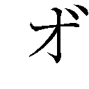――――りやあああああああああああああああああああ！！！！！！！！！！！！！！！！！！！！」
「ぎいやああああああああああ――――――――――！！！！！！！！！！！」
金造の鉄拳が弟の頰を穿つ。志摩の身体は二メートルほど吹っ飛んだ。
金造はその場に仁王立ちになると、半ば気絶している弟に凄んだ。
「俺が、そないケツの穴の小さな男に見えるんか!? ア!? ゴラ!!」
再び殴りかかりそうなその勢いに、さすがに勝呂が止めに入る。
「やめや、金造。志摩は関係ない。俺と子猫丸で考えたことや」
「!? 坊が......」
金造は驚いたような顔になると、ピンと背筋を正し「すんませんでした!!」と腰をきっかり九十度に曲げて謝罪した。「坊に、そないご心配をおかけしとったとは......」
しきりに恐縮する金造に、
「ええんや。そんなことより、そろそろ話してくれへんか？ どうして、柔造と喧嘩なんかしたんや？ お前ら、仲のええ兄弟やないか」
勝呂が水を向ける。金造が苦しげに視線を逸らせた。
「............それは」
「金造さん」
子猫丸が励ますようにその名を呼ぶ。
金造はしばらく逡巡していたが、やがて重たいため息を吐くと、ポツリポツリと語りだした。
「......聞いてもうたんです」
「何をや？」
「柔兄が熊谷のオッサンや、柳葉魚としゃべっとるんを――」
任務帰り、錦や青と兄たちの結婚について言い争いながら京都の出張所に戻った彼は、障子の向こうから兄たちの声が聞こえてくるのに気づいた。
（皆でお茶でもしとんのかいな？）
そういえば、任務が忙しく昼も食べていない。朝も抜いているから、今日は食事らしい食事をしていないということだ。忙しく動きまわっているうちは気にならないが、一度気づいてしまえば、目がまわるほど空腹だった。
（なんか貰お）
もしかすると、差し入れの折詰や寿司などがあるかもしれない。
そう思い、障子に手をかけた――その時、
『金造？ アイツはダメや。ダメ。アカン』
（え......？）
兄の声が、取りつく島もないような己へのダメ出しを告げた。呆然となった金造が、何かの聞き間違いだと、障子にへばりつき耳をそばだてる。
『でも、柔造さん。金造さんかて――』
『いや。アイツはアカン』
柳葉魚のとりなしの言葉を遮り、再び聞こえてきた兄の容赦ない口ぶりに、血の気の失せた金造がよろりと床に膝をついた。
（なんなんや......なんなんや、コレは......）
いっそ、夢であってほしい。いや、夢に違いない。そう思っていると、
『アンタ、そこで何やっとんの？ 邪魔くさ』
青が小憎たらしい顔でやってきた。反射的にその頰をつねると、『痛いわ!!』『何すんねん!?』『このアホ申!!』と目を剝いてきたので、夢ではないとわかる。
『......なんぼしても、隊長のお考えは変わらへん、言うことですか？』
熊谷の躊躇いがちな声に続き、兄がひどく平板な声で告げた。
『ああ。他の奴はどない思うとるか知らんが、俺の考えは変わらへん。アイツは、いらん――おっとすまん。もしもし、ああ俺や。おう、その件やったら......』
そこで兄の携帯に着信が入ったために、話は中断したが、金造の頭の中はすでに真っ白だった。
それから後のことは、ほとんど覚えていないという――。
「柔造が？ あの柔造が、そう言うたんか？」
「はい」
別人のように神妙な面持ちで肯く金造に、勝呂が信じられないという顔をする。子猫丸も同じ気持ちだった。
（柔造さんが......そないなことを？）
柔造は子供が大好きと言うだけあり、弟妹の世話を好んで焼く、心やさしい男だ。根っからの兄貴肌で、金造を『ドアホ』、末弟を『ドスケベ』と呼びはするが、その実力はちゃんと認めていたように思う。
厳しくてやさしい、理想の兄だ。
一方、金造は、はたで見ていてもわかるほどに、五歳年上の兄を深く尊敬している。忠誠を尽くす明陀の総領息子である坊とはまた別に、兄を男の中の男として崇め奉っているようなふしすらある。
その兄に、己の存在を全否定されたのだ。
どれだけショックだったことか......。
「俺は、明陀の男として志摩家の男として、恥ずかしゅうないよう生きてきたつもりやったんですけど......柔兄はそう思うてなかったみたいなんですわ」
金造が淋しげに笑う。
そして、勝呂に向かって再び一礼すると、
「――すんません。お先に戻ります」
断りを入れ、食堂の出入り口へと向かう。その背中はひどく頑なで、あらゆる言葉を拒絶しているように見えた。
「金造......」
「金造さん」
子猫丸はなんと言って彼を呼び止めていいかわからず、おろおろした。となりで勝呂も言葉をかけかねているふうだ。
――すると、
「な～んや。アホやな、金兄も。そんなことで悩んどったんか。そんなん絶対、聞き間違いやて。腹減って耳が遠くなっとったんとちゃう？」
いつの間に復活したのか、ちゃっかり席に座って、食べ手のいなくなった冷や麦を啜っていた志摩が、適当なことを言う。
「どーせ、『アイツはイラン人っぽい顔しとる』とか、『アイツはイランイランの花が好きやったな』とか、そんなことやて。ぐちぐち悩むだけアホらしいわ。あー、アホらし」
ぎょっとした勝呂と子猫丸が、
「（志摩!! このバカが!!）」
「（志摩さんっ!!）」
小声で友をたしなめる。
幸い、金造には届いていなかったらしく、そのまま食堂を出ていった。
二人してはーっとため息を吐く。
勝呂が薄情な友をギロリと睨む。
「で？ 金造はイランイランの花が好きなんか？」
「さあ？ 花の名前なんて知らんのとちゃいます？」
これだ。
勝呂と子猫丸の目が限りなく冷たくなる。
すると、志摩と同様に空いている席に腰かけ、冷や麦を啜っていた燐が、
「どーいう状況なんか、俺にはわかんねーけどさ」
と切りだした。
「兄弟だからこそ、ちゃんと腹割って、話し合ったほうがいいんじゃねーの？」
「......奥村」
「家族だから――兄弟だから、なにも言わなくてもわかり合えるとかさ、そーいうのに逃げねーでさ。いつまでも向かい合わねえでいると、きっと後悔すんぞ」
さらりとした口調だったが、何故か重く響いた。
「まあ、俺の言えたことじゃねーけどさ」
「奥村くん......」
彼にも双子の弟がいる。子猫丸から見れば、そこそこ仲のよい兄弟に見えるが、当人同士の間ではいろいろあるのかもしれない。
黙って聞いていた勝呂が、眉間に深いしわを寄せた顔で、そうやな、と肯く。「明日は土曜やし、柔造と話し合うよう、説得してみるわ。ダメなら、首に縄つけてでも京都へ連れ帰ったる」
「おう」燐が笑顔で応じる。そして、目の前の赤い冷や麦の山を見ると、
「もったいねーから、お前らも食ってけよ」
と言った。「雪男は今日、コウカなんちゃらとかいうのの会議で遅くなるとか言ってたし、俺一人じゃこんなに食いきれねーからさ」
「コウカなんちゃらってなんやねん」
「コウカ？ 人事考課のことですかね？」
「奥村くん、そこの薬味取ってくれへん？ あと、梅干叩いたヤツも。いやー、特製の汁が美味いわぁ～」
のほほんと志摩が言う。その頭からは、すでに四兄のことなどきれいさっぱり消え失せているようだ。そんな友に、
「お前は......ホンマに」
と、勝呂が天を仰ぐ。
「たまに、その楽観的な脳みそが羨ましいわ」
「ほんなら、取り替えますか？」
「いや、絶対にいらん」
勝呂は即答すると、金造のことが心配だから、と燐に詫び、食堂を後にした。子猫丸もそれに続く。
――俺は、明陀の男として志摩家の男として、恥ずかしゅうないよう生きてきたつもりやったんですけど......柔兄はそう思うてなかったみたいなんですわ。
誰よりも明陀が好きで、誰よりも家族が好きなあの人が、どんな気持ちで口にしたのだろうか？
想像しただけで、いたたまれなかった。
「――坊!? どうされたんです？ 子猫も？」
勝呂と子猫丸が京都出張所に顔を出すと、柔造が驚いた顔で駆け寄ってきた。
頰や額に走る引っかき傷は、未だに喧嘩ばかりだという婚約者につけられたものだろうか......？
「連絡を頂ければお迎えに上がりましたんに。なんぞ、東京であったんですか？ 廉造のヤツは一緒やないんですか？ まさか!! アイツ、何かやらかしたんですか!?」
途端に、鬼の形相になる。勝呂が慌ててそれを否定した。
「いや、なにもあらへん。志摩は東京に残っとるし、俺らはコイツについて来ただけや」
「コイツ？」
柔造が片眉をひそめる。そして、二人の背後に下から二番目の弟の顔を見つけると、意外そうな顔になった。「なんや、お前、東京に行っとったんか」
「............」
「まさか、坊に迷惑かけとらんやろうな？ なに黙っとんねん」
兄の目を見ず、むっつりと黙りこくる金造の背中を勝呂が軽く叩く。
「ホラ、金造」
「......金造さん」
子猫丸もそっと促す。
金造はすっと顔を上げると、「柔兄」と呼んだ。怖いほどに真剣な声で、子猫丸まで緊張してしまった。
金造がぐっと拳を握りしめる。
「俺は必要ないんか？」
「ハァ？」
「俺は明陀に必要のない男なんか？」
「ハアァ？ なんやねん、藪から棒に」柔造が心底、不思議そうな顔をする。「そういや、お前。あん時も妙なことほざいて、飛び出して行きよったな？ ホンマ、どないしたんや？ まだ思春期拗らせとんのか？」
見当違いな兄の言葉に、金造が堪りかねたように叫んだ。
「柔兄が――柔兄が、言うとったんやないか!! 俺、聞いたんやで!? 柳葉魚や熊谷のオッサンとしゃべっとんの......俺は、明陀にいらんて――」
「ん？ なに言うとるんや。そないなこと――あ......あー、そのことかいな」
怪訝そうな顔をしていた柔造が、ようやく合点がいったとばかりにポンと手を叩いた。一転して晴れやかな顔になると、
「それやったら、交換留学生の話やで」
「!?」
子猫丸が勝呂と顔を見合わせる。
「交換......」
「留学生？」
「はい」と、柔造が爽やかに肯く。「正十字騎士團の支部間で、交流や連携を促すためのもんらしいんですが、うちにも何個か話がきとって、この金造にはイラン支部から誘いがあったんです。他支部の戦い方を間近で見られるいいチャンスやし、戦術の勉強にもなるとも思うたんですが、今、コイツに抜けられたら警邏二番隊に大打撃やから、俺は反対しとるんです」
そう言うと、金造のほうを見やった。真っ直ぐな眼差しを弟へ向ける。
「せやけど、決めるんはお前自身や。お前が行きたい言うんやったら、俺は止めん。行って、いろんなもんに触れ。いっぱい学んでこい」
「........................」
兄の穏やかな笑みに、金造が震える声で「..................柔兄」とつぶやいた。
「なんや？」
「......信じとった......信じとったでええええええええええええええ！！！！！！！！！」
いきなり元気になった金造がバンド仕込みの大声で叫ぶ。鼓膜が破れんばかりの大音声に、子猫丸と勝呂がさっと両手で耳を覆った。
「そうや、俺が明陀におらんでどないすんねん!? 京都の町はこの金造様が守ったるわ！！！！！！！！！！！！ ガハハハハハ！！！！！！」
現金なもので、すっかり普段の調子に戻った金造が、團服に着替える手間すら惜しみ、私服のまま錫杖を片手に飛び出していく。
まるで嵐のようなその勢いに、運悪く通りかかった青が突き飛ばされ、「ヒッ!?」と叫んだ。「なんなんや、あのお申......」
眉をひそめた彼女は、呆然と立ち尽くす勝呂らに気づくと、
「――竜士様。お戻りになられとったんですか？ 今、志摩のバカ申が雄たけびをあげて笑いながら走り去っていったんですけど、なんぞあったんですか？」
気味悪そうに尋ねてきた。
「............ホンマ、なんやったんやろうな」勝呂が遠い目をしてつぶやく。「俺にもわからへんわ」
子猫丸も、今までの心配はなんだったのだろう、と両の肩を落とした。
そんななか、
「ホンマ、アイツはドアホやな」
柔造一人が吞気に笑う。
子猫丸はふと、兄弟喧嘩は二の膳よりご馳走、ということわざを思い出した。鴨の味、とも言う。
（まあ、柔造さん的には、喧嘩にすらなってなかったわけやけど......）
友の言う通り、放っておくのが一番だったのかもしれない......。
その後、出て行った時と同じように騒々しく戻ってきた金造が、『このたびは坊の御手を煩わせてしまって......』と、何十回も詫び、『せめてもの罪滅ぼしに、受け取ってください......!!』と、山のようなお土産を持たせてくれた。
八ッ橋に阿闍梨餅、鯖寿司、京菓子から漬物まで――。
東京へ向かう電車の中で、雪崩を起こしかけている土産ものの山を前に、勝呂が眉をひそめる。
「こない持たされても、正直、食いきれんな」
「奥村くんとか杜山さんとか......皆に声かけてみましょか。きっと、喜びますよ」
「せやな」
勝呂が眉間のしわを解く。
子猫丸が携帯のメールで皆に連絡を取りつつ、
「奥村先生が参加してたコウカ云々って、交換留学生の会議のことやったんですね」
と言うと、勝呂が再び苦い顔になった。
「奥村がちゃんと覚えとれば――いや、覚えてたかて、そこから連想できたかはわからんけどな」
それからしばらくは、お互いに黙って電車に揺られていた。
メールを送り終えた子猫丸が、ふーっとため息をもらす。
「どないした？ 子猫。くたびれたんか？」
「いえ......結局、志摩さんが一番、金造さんのことも、柔造さんのこともわかってたんやな、て思って......」
「ああ、イラン人云々の件か」
勝呂が片目を眇める。「確かに。当たらずとも、遠からずやったな」
――そんなことで悩んどったんか。そんなん絶対、聞き間違いやて。腹減って耳が遠くなっとったんとちゃう？
――どーせ、『アイツはイラン人っぽい顔しとる』とか、『アイツはイランイランの花が好きやったな』とか、そんなことやて。ぐちぐち悩むだけアホらしいわ。あー、アホらし。
あの時は、実の兄があそこまで落ちこんでいるのに、なんて薄情な人やと、呆れるのを通り越して腹立たしくすらあった。――だが、結局のところ、彼は他の誰よりも両名の性質を理解していたのだ。
「......やっぱり、ホンマの兄弟にはかないませんね」
少しだけ淋しい気持ちで笑うと、
「阿呆」
勝呂の指に額を弾かれる。
「！ 痛っ!?」
「――俺は、お前も志摩もホンマの兄弟やと思うとる。そもそも、明陀は皆、家族や。違うんか」
「..............................はい」
少しだけ泣きそうな思いで肯く。照れ臭いのか勝呂はそっぽを向いている。
子猫丸は胸の奥に温かい火のようなものが灯るのを感じた。
（......僕は、ホンマに幸せもんやな）
血が繫がらなくても、兄弟がいる。
血が繫がっていなくても、大切な家族がある。
帰るべき場所がある。
守りたいものがある。
（前に、奥村くんが言うてくれた通りや......）
そう思い、照れ臭くなる。
東京に戻ったら、志摩にイラン支部の件を話してやろう。
それみたことかと笑うだろうか？
「今度は、三人で帰りましょうね。東京の美味しいもんでも持って、もっとゆっくり」
「............そうやな」
勝呂がつぶやくように答えた声が、電車の走行音に搔き消されていく。
子猫丸は列車の揺れに身を任せながら、ひどく幸せな気分で車窓を眺めた――。
携帯のアラームが鳴っている。
（――起きなきゃ......）
そう思いながら、奥村雪男はベッドの上で寝返りを打った。
兄ではあるまいし、いくら休みだからといって、昼過ぎまで眠っているわけにはいかない。やるべきことは幾らでもある。
（えっと、今日は......確か、授業計画表がまだだったな。あと、この前の任務報告書も出さなきゃ......小テストの問題も作らないと......あ、領収書の精算もあったんだっけ。その後で時間があったら、高校のほうの課題にも手をつけなきゃ......そろそろヤバイ）
すし詰めになった予定を頭の中で整理しつつ、身を起こそうとするが、今日に限ってひどく眠たい。
まるで睡眠薬でも飲まされたかのように重い瞼と格闘していると、兄の声がした。
「ゆき......オーイ、ゆき......起きろよ」
（？ 珍しいな。兄さんが、僕より先に起きているなんて）
雨が降らなければいいけど、と思いながら、目を瞑ったまま欠伸を嚙み殺す。どういうわけか、一向に目が覚めない。
そんな弟を、兄が大きく揺さぶってきた。
「ゆき......オイってば、今日はりゅう......たちとじょ............の約束だろ？ 早く......」
まだ脳が完全に起きていないのか、兄の声がひどく遠くで叫んでいるように聞こえる。ところどころよく聞き取れないうえに、虫の羽音のような雑音がどうにも耳障りだった。
それに、なんだか妙に声が高い。というか、か細い。
「......んー......どうしたの？ 風邪でもひいた？」
やっとの思いで体を起こした雪男が、片目をこすりながら「――兄さん」と続けようとし、その場に凍りついた。
「............」
「珍しーな、お前が寝坊なんて。これは、アレだろ？ 『猿も川に流れる』だな？」
こちらをのぞきこんでいた可憐な少女が、あたかも兄の言いそうなことを口にすると、自慢げに笑った。
（――いや、川には流れない。それを言うなら、『猿も木から落ちる』だよ。兄さん。『河童の川流れ』と混ざってない？）
とりあえず、そんなツッコミが頭に浮かぶ。枕元に置いてあるはずのメガネを探し、耳にかけたが、目の前の少女が兄に変わることはなかった。
雪男はまじまじとその顔を見つめた。
目が大きく、顔が小さい。くせっ毛らしき黒髪は、ちょっと長めのショートカットぐらいだろうか――？ 全体的に小柄な少女で、ピンクのフリルがついたパジャマの後ろから、真っ黒な尻尾がふよふよと揺れている。
間違いなく、兄の尻尾だった。その事実に思わず鳥肌が立つ。
「............兄さん、なに？ その......恰好は」
「はあ？ なんだよ。お前、寝惚けてんの？」
少女が眉をひそめる。
「てか、なんだよ、兄さんって？」
「............」
訝しげなその顔には、確かに兄の面影があった。
「あのさぁ、前から思ってたけど、働きすぎだって、お前。毎日毎日、仕事持ち帰ってるし、飯もまともに食ってねえことあるだろ？ そんなんじゃ、おかしくなっちまうぜ？ 姉ちゃん、お前が心配だよ」
たった数時間しか違わないで生まれたくせに、やたら兄貴風――いや、今は姉貴風か？――を吹かせるところも同じだった。
なにより、その尖った耳と尻尾が、雄弁に物語っている。
信じがたい。信じがたいが、目の前にいる少女は『兄』なのだ。
（......どういう、ことだ？）
雪男が無言で頭を抱える。
一体全体、何がどうなれば、『兄さん』が『姉さん』になるというのか？
（まさか――）
思い当たることが一つだけ、ある。
前に、任務で女子寮に潜入するに当たって、塾生及び雪男が女装をしたことがあった。フェレス卿の指示ということもあり、やむを得ずだったはずだが......。
（あの時、兄さんはけっこう、ノリノリだった......）
明らかに男だとわかるゴッツイ女装を、しえみと出雲に大爆笑されながらも、『俺、けっこー、可愛くね？』と半ば本気で言っていた。あの時は、ほかに気がかりなことがあり、まるで気にしていなかったが――。
（あれがきっかけとなって、女性への憧れが強まり、僕に内緒で手術に踏みきったのか......？）
ぞわりと震えた雪男が少女――いや、姉を見上げる。
恐ろしいことに胸があり、おぞましいことに腰のくびれがあった。雪男の背筋を冷たい汗が伝う。
（――いや、でもそれにしては、時間的におかしい）
昨日までは確かに男だった。いくらなんでも、一晩で手術は完了しないだろう。
「兄......姉さん？ つかぬことを聞くけど――」
「にいねえさんって、なんだよ？ なんで疑問形なんだよ？」
「その胸は......本物？」
「はああ？」
恐る恐る尋ねる雪男に、姉が奇妙なものでも見るような目つきになって言った。「なに言ってんだよ？ 本物に決まってんだろーが。ホラ、お前にもついてんだろ？ 同じもんがさ」
「え............」
次の瞬間、無造作に伸びてきた姉の右手が自分の何を鷲づかみにしたのか、雪男には理解できなかった。姉が口惜しそうにうめく。
「くそー、また一人だけデカくなりやがって」
「............」
「コラ、ゆきこ！ ちっとばっかし巨乳だからって、えばってんじゃねーぞ。ぜってー、お前の胸を追いぬいてやるからな!! よく見とけよ」
手を放した姉が、今度はビシッと指を突きつけてくる。
数十秒後、姉の指先が自分の胸元を指していることに気づいた雪男は、恐る恐るその視線を下げた......。
そして――
「――っ！！！！！！！！！！！！！！？？？？？？？？？？？？？？？？？？？？？」
絶叫した。
「ゆ、ゆきこ!? ど、どーしたんだよ!? 突然......」
狼狽する姉をよそに、
（まさか......に、兄さんのみならず............僕まで..................）
顔面蒼白になった雪男が、がくりとうなだれる。
殺風景だったはずの窓辺に、淡い色味のカーテンがかけられている。
まったく見覚えのないレースのカーテンが、風に吹かれふんわりと視界の隅に舞う。その奥で、真っ黒な蝶がひらりと瞬くのが、見えた気がした――。
「りゅうこたちと遊びに行く約束してんだろ？ 忘れちゃったのか？」
「りゅうこって、誰!?」
「こねこがちょっと愛好会の用事で出てるらしーから、帰ってきたら女子会に出発な」
「女子会って、男が参加できるものなの!?」
「ホント、なに言ってんだ、お前。マジで変だぞ？」
挙動のおかしい『妹』を姉がズルズルと引きずってきた先は、正十字学園高等部女子寮・新館だった。
「ええ～？ ゆきちゃんセンセーが変ってぇ？ どーいうことぉ？」
甘ったるい砂糖菓子を舌の上で転がすようにしゃべる彼女は、この部屋の主である志摩れん。
薄っすらとピンクがかった茶髪のツインテールは、くるくるとカールし、頰は淡い薔薇色。色白のなんとも愛らしい少女だが、脱ぎっぱなしの服や読みかけのファッション雑誌、食べかけのスナック菓子や、ダイエット器具の散乱したベッドの上に、平気で寝転がっている。
なにより信じられないのが、Ｔシャツの下に、何故か男もののトランクスを一枚穿いただけの恰好で、どういうわけか、もこもこのレッグウォーマーを穿いている。暑いんだか寒いんだか、女なんだか男なんだか、わけのわからないファッションセンスだ。
「まあ、なんつーか、まんぺんなく？」
「それを言うなら、まんべんなくだろ？ に......姉さん」
「ホラ出た！ 『に、姉さん』ってなんだよ？ なんで『に』って最初につくんだよ!?」
「確かに変やわぁ。しゃべり方が、ゆきちゃんセンセーっぽくない言うか、男の子みたいやん」
すかさず突っこむ姉に、れんが同意する。ヘラヘラしているわりに、存外に鋭い。
雪男が忌々しい思いで、
「君のほうがよっぽど変ですよ。志摩く――いや、志摩さん」
「えー、なにぃ？ どこがぁ～？」
「言いたいことは多々ありますが、とりあえずは、そのおいはぎに遭ったような恰好をどうにかしてください」
「アハハ。ホンマ、変やわぁ～」
れんがケラケラと笑う。「おいはぎて。なにソレ？ ウケるぅ～」
そんな友を「コラ、れん。やめや」とたしなめ、
「先生、なんやかやでお忙しいし、疲れてはるんやないですか？」
案じるようにそう言ってきたのは、勝呂りゅうこである。
男性であった時と同じく、気合いの入りまくったツートンカラーのヘアが特徴の長身スレンダーな美女だが、何故か胸に『３年Ｂ組 勝呂』と書かれたあずき色のジャージ姿である。
中学校の名前らしき刺繡があるので、おそらく、使わなくなった古いジャージを普段着にしているのだろう。
手首に輪ゴムを数個嵌めているのが、妙に生活感がある......というか、ぶっちゃけ昭和のおばさん臭い。
「少しは休んだほうがええですよ」
「ありがとうございます。勝呂......さん。ところで、差し支えなければ教えて頂きたいんですが......何故、中学の頃のジャージを着られているんですか？」
他のものの洗濯が間に合わなかったから――とか、そういった答えを期待する雪男に、りゅうこがこともなげに言う。
「そんなん、まだ全然着られるし、もったいないからに決まっとるやないですか。楽やし」
「誰にも見せるわけやないですしねぇ～。楽が一番」
と、れんが同調し、ふわぁ～と気だるそうに欠伸をした。「れんちゃん、男の子に会わないんやったら、一週間ぐらいお風呂に入らなくても平気やわぁ～」
「一週間はさすがにダメやろ」
りゅうこがたしなめる。
当たり前だ、と雪男が胸の中で何度も肯いていると、
「まあ、二日ぐらいは髪洗わなくても平気やな」
（は......!?）
雪男がぎょっとその顔を見る。りゅうこは平然としている。
（どういうことだ......）
女の子といえば、やたらシャンプーの銘柄に詳しかったり、朝シャンをしていたせいで遅刻とかしてしまうような生きものではなかったか？ キャンディのような可愛い入浴剤を友達同士でプレゼントし合ったり、半身浴でダイエットを試みたり、時に手作り石鹼を作ってみたり――。
それらすべては、男の幻想......？ 夢？
（実際は、こうなのか？ まさか、しえみさんも......）
動揺する雪男に、姉が「どうしたんだ？ ゆきこ。お前、すげー変な顔してんぞ？」と無邪気に笑う。「ギャハハ。すげー、ぶさいく」
そんな姉の暴言に苛立つ余裕もなく、雪男が心の中で頭を振る。
（落ち着け......彼？ いや、彼女たちは元・男だ。規格外なんだ！ そうに違いない!!）
きっと普通の女の子は、毎日お風呂に入って髪を洗い、時には朝シャンに勤しみ、家でも可愛らしいルームウェアを着て、部屋もキレイなはずだ。
こんな汚部屋で、奇妙な恰好をし、不潔な会話に花を咲かせたり、断じてしない。
必死に己に言い聞かせていると、
「それにしても、この部屋、あちーな」
とぼやいた姉が、年代物の扇風機の前に陣取り、その上でスカートをバサバサし始めた。
「あー、涼しー。マジ、生き返るわー」
「な、なにやってんだ!? に......姉さん!!」
ぎょっとした雪男が姉の手をつかんでやめさせる。
「はしたない真似をするな!!」
「なんだよ、ゆきこ。オーバーだな。下に短パン穿いてっから平気だって。女子高とかじゃ、皆やってるし」
「そういう問題じゃないだろう」
また一つ、女子への夢を打ち砕かれた雪男が、姉を怒鳴りつけていると、
「――スミマセン、遅くなりましタ」
ハスキーな声と共に、扉が開いた。「用事ガ、思いのほか長引いテ......」
「おう、遅かったな。こねこ」
（三輪くん？）
もう一人の部屋の主・三輪こねこが戻ってきたのだ。
咄嗟に、子猫丸が女装した時の姿を思い浮かべるも――現れたのは......。
八頭身を越えるモデルのような長身に、グラマラスなボディ。そして、うつくしい金髪を腰近くまで伸ばした、絶世の美女であった。それこそ、ハリウッド女優にいそうだ。
「てか、誰!?」
「三輪こねこデスガ......ゆきこ先生、どーしたデスカ？」
うつくしい顔を困惑気味に曇らせたこねこが、微妙な片言で尋ねてくる。
（くっ......これはさすがに想定外だ......）
ハーフ......なのだろうか？
もはや、以前の彼を思い出させるものは、メガネぐらいだ。
雪男ががっくりと床に両膝をつく。
（なんなんだ、この状況は......）
一体自分は、皆は、どうなってしまったのか――？
痛む頭を抱える雪男を尻目に、
「んじゃ、まあ。こねこも帰ってきたし、行くか！」
と姉が明るく言う。
――次の瞬間、
「ちょい、待ちや！」「あーん、十分。十分だけ待っといてやぁ～」
りゅうことれんの声が合わさった。
こちらが答える前に、バタバタと出かける支度をし始める。
（どうして、さっきまでの時間でやらなかったんだ？ 何故、支度もしてないのにグダグダしゃべってたんだ？）
雪男が呆然と二人を見やる。櫛はどこだとか、ニーソックスの片方がないとか、お気に入りのバッグに染みがついてるとか――ぎゃあぎゃあやっているうちに、すぐに十分が経過。その後は、
「あと、五分」「あと、十分。十分」「五分だけ」「六分!!」「四分でええから！」「三分!!」
と際限なく時間が追加されていく。
（なんなんだ、一体......それなら最初から準備にかかるだけの充分な時間を言えばいいだろう？ どうして小刻みに申告するんだ!? だいたい志摩くんはわかるとして、あの真面目で細かい、キレイ好きの勝呂くんはどこへいってしまったんだ......!!）
イライラする雪男の横で、姉とこねこはこういった状況に慣れているのか、ことさら苛立ちもしなければ、急かしもせず、
「なー、こねこ。正十字スイーツ堂のシアワセバイキンって知ってるか？」
「ええ、知ってマス。でも、バイキンないデス。バイキングデス。正十字スイーツ堂、バイキングのメニューに、ホールケーキもあるのガ人気デスよネ」
「そーそー。それで、今日、買いものの後で寄ろうと思ってさ」
「Ｏｈ！ それは素敵デース！」
「な？ だろ？ あそこ、チョコタワーあんだぜ？ 俺、絶対マシュマロつけようっと」
「ウフフ。楽しみデスネ」
女子トーク（？）で盛り上がっている。
結局、支度を終えた二人を待って出発できたのは、それから一時間半後のことだった......。
「あー、それ、私が先に取ったのよっ!?」
「ちょっと、アンタ、どきなさいよ！ いつまで見てんのよ!?」
「他人の見てるもの横から盗らないでくれます？ どんだけ図々しいのかしら」
「アラ、それいいわね。これと替えてよ」
「キープは三個までって言われてんでしょ？ アンタ、何個持ってんよの!?」
「痛っ!! アタシの足踏んだの誰よ!?」
「ちょっとお!! 押さないでよっ!!」
「それ、アタシが先に目ェつけてたのよ！ 譲りなさいよ!!」
「はあ!? なに言ってんの!? 頭おかしいんじゃないの？」
「姉さん......ここは、戦場か？」
「バーゲンだよ」
一瞬でも手を放せば、無数の手が伸びてきて品物を奪われる。手を放さなくとも、力任せに奪い取られる。
あたかも屍肉を漁るハゲタカのような女性客に圧倒された雪男が、ダラダラと冷や汗を垂らす――そのとなりで、
「まあ、バーゲンは女の戦場っちゃ戦場だけどな」
無駄に恰好をつけてそう言うと、姉もハゲタカの群れに飛びこんでいった。「あ、それ俺がもらい!!」「............」
純粋な力の強さで言えば、人類を遥かに凌駕するはず（悪魔だから）の姉が、胸に大きな虎が描かれたＴシャツを着たオバちゃんと、必死に薄手のパーカーを取り合っている。しかも、最後には「あっ!?」と彼方を指さしたオバちゃんにつられ、力が緩んだ隙に、まんまと奪い取られてしまった。
姉が地団駄を踏んでいるのが見える。
「くそっ!! 卑怯だぞ!?」
「卑怯もクソもあるか。バーゲンはね、命がけなんだよ」
「畜生!! 次は絶対、俺が勝ってやるからな！」
「ハン。返り討ちにしてやるよ」
盛大に口惜しがる姉を、虎柄プリントのオバちゃんがせせら笑う。
（なんなんだ......なんなんだ、この茶番は!? しかも、オバちゃん強すぎるだろう。あの兄さんに勝つとか、本当に人間なのか？ まさか、悪魔じゃ――）
雪男は再び、頭が痛くなってくるのを感じた。
広いフロアを埋め尽くすのは、ほぼ女性である。わずかにいる男性は（おそらく、無理やり連れてこられた夫ないし彼氏だろう）皆、フロアの隅にあるベンチに腰かけ、死んだ魚のような目で煙草を吸っているか、山のような荷物に埋もれ、無心に携帯を弄っている。
その姿になんとも言えぬ哀愁と、胸が軋むような切なさを感じるのは、自分が男だからだろうか――？
「あー、またっ!! それ、俺が先に取ったヤツじゃねーか!!」
「弱内強食さ」
姉と虎柄オバちゃんの攻防はまだ続いているようだ。今度は、タータンチェックのミニスカートを取られたらしい。
「だいたいオバちゃん、それ着れねーだろ!? 明らかにサイズ小さいじゃん!!」
「フン。ネットで転売すんだよ」
「あ、あそこ超人気イケメン俳優のＮが......!!」
「なんだって!?」
「うっそぴょん！ やった、取りぃ～!!」
「よくも騙してくれたね!!」
「騙したもクソもねーだろ？ バーゲンは命がけなんだろ？」
（み......醜い......）
心底、うんざりした。
まあ――百歩譲って、あの強そうなオバちゃんならば、まだわかる。
だが、腰が海老のように曲がった老女や、見るからに可憐な少女、ＯＬふうの清楚な女性までもが、鬼のような形相でセール品を奪い合う様に嫌気がさした雪男が、じりじりとハゲタカの群れから後退する。
なぜか商品の入っていない空のワゴンの前で、はあ、と重たいため息を吐いていると、どこから入ってきたのか、一匹の蝶がワゴンのまわりをひらひらと飛びまわっている。
その光景に心を和ませていると、店員の一人が、ひときわ大きな段ボール箱を持ってやってきた。
嫌な予感がした。
だが、雪男がその場を離れるより早く、店員がワゴンに段ボールの中身をぶちまけた。さらにプライスダウンされた目玉品がワゴンに山盛りになる。
直後、殺気立った女性客が、いっせいに押し寄せてきた。
「ちょ......ちょっと、待ってくだ――」
雪男は懸命に両手を振って、その大軍を押し留めようとしたが......。
暴走するヌーを止めるほうが、まだ安全だったかもしれない――。
「大丈夫か？ ゆきこ」
「......なんとか、生きてるよ。姉さん」
戦利品を大事そうに胸に抱えた姉が、歩道を歩きながら心配そうに尋ねてくる。雪男は死んだ魚のような目でそれに答えた。
――あの後、殺気立った女性客たちに揉みくちゃにされた雪男は、半ば這うようにしてその場を離れたが、髪はぐしゃぐしゃ、服はズタボロ......まさに満身創痍といった状態だった。
祓魔師の任務でも、これほどボロ雑巾のようになることは稀だ。
しかも、姉は『ゆきこ、大丈夫か!?』と駆けつけてきたものの、妹が無事だとわかると、再び、あのオバちゃんとの闘いに赴いてしまった。
りゅうこ、れん、こねこに至っては、バーゲン品の争奪に夢中で雪男の災難に気づいてすらいない。
（............しょせん、姉妹愛や女の友情なんて、そんなものか）
そんなことを自然に考えかけ、
（はっ!? 僕は、今、なにを考えていたんだ......？）
ゾッとする。
女の友情？ 姉妹愛!?
己の思考回路が信じられず押し黙る雪男を、バーゲンで欲しいものが手に入らなかったせいだと思ったのだろう、
「なぁ、ゆきちゃんセンセー。これあげるわ」
と、れんがトコトコ近寄ってきた。その手にはフリルとリボンがふんだんについた真っ白なキャミソールが握られている。思わず、雪男が後退った。
「いえ、悪いですよ――」
「ええのん。なんかなぁ？ 気づいたらキャミソールばっかり六枚も買っててん。ええから、もらってぇや。な？」
「六枚も......ですか？」
安いとはいえ、どうしてそんなに同じものばかり買うのかと尋ねると、れんが「えーっ？」と可愛らしく小首を傾げて見せた。
「見てるうちに、色違いとか柄違いとかぁ、どれもこれも欲しくなっちゃうんですわぁ～。頭に血ィ上ってるせいか、気づいたらそればっか買ってたりとかぁ～、なんか、いろいろ入れてったつもりなのに、同じ系統のものしか入ってなかったりとかぁ～？ いらないものまでいっぱい買っちゃったりとかぁ～？ よくありません？」
「残念ですが、まったく、ありません」
断言する雪男に「またまたぁ～」と、れんが爆笑する。何故そこで爆笑なのか全然理解できない。
すると、
「私もついＴシャツばっかり五枚も買うてもうたんで、よかったら」
「私も、五本指靴下ばかリ十コも買てしまいまシタ。よかったラ、貰てクダサイ」
りゅうことこねこも差し出してくる。
（どうして、そろいもそろって同じものばかり買うんだ？ あれだけの時間をかけて何も考えてないのか!? アホなのか？ 志摩くんばかりでなく、三輪くんや勝呂くんまで......）
雪男が嘆かわしさに頭を抱えていると、
「あー、ここだ。ここ」
姉の足が止まった。
その先に、白ベースの可愛らしい店舗が見えた。窓から見える店内は、オレンジ色の照明が設置されていて、全体的にやわらかい雰囲気だ。
その外観から、単純にアクセサリーか何かのお店だろうと思ったが、姉の背中越しにその店内をのぞき、青ざめた。
――ランジェリーショップ・ミナミセイジュウジ。つまり、下着屋である。
「............」
「さ、入ろうぜ？」
「――っ!! 僕は、遠慮します!! では!!」
反射的に逃げだそうとした雪男の腕を、姉がガシッとつかんだ。「はあ？ なに言ってんだよ、ゆきこ。お前が昨日、南十字に行くなら、ここに寄りたいって言ったんだろ？」
「は!? 僕が!? 冗談だろ!?」
「冗談って......お前なあ。ホラ、なんつったっけ？ カーター？ え？ 違う？ ああ、ボウリングのガーターか。そうそう。そのガーターベルトとかいうのを買いたいんだろ？ 前から言ってたじゃん。お前。戦闘の時にニーソックスが落ちてくるのがイヤだから、黒タイツ穿いてっけど、アレがあったらニーソックスでもいいかな、とかなんとかさ」
「............」
ショックのあまり固まってしまった雪男を、姉が「さ、行くぞ」と半ば強引に引き摺って店に入っていこうとする。我に返った雪男が、
「姉さん!! 僕が入ったら犯罪だから!!」
必死の抵抗を試みるも、
「お前、本当に変だぞ？ 何がどう犯罪なんだよ？」
妙な顔をした姉は相手にせず、
「ホラホラ、後がつかえてますよぉ～？」
姉に手を引かれ、れんに背中を押される形で店内に足を踏み入れる。
「あ、アレ、可愛いぃ～♥ れんちゃん似合いそぉ～」
「ほお。これも、ええな。シックな色が好みやわ」
「これも素敵デスよ、お嬢。どですカ？ ゆきこ先生。お嬢に似合いマス？」
「これもいいじゃん。なー。どうだ？ ゆきこ」
（本気で、勘弁してくれ......）
目のやり場に困った雪男が、ぎゅっと瞑目していると、
「あれぇ～？ ゆきちゃんセンセー、また大きくなってへん？」
そうつぶやいたれんが、背後から雪男の胸を両手のひらで、ひょいと持ち上げる。
「これは......Ｄいや、Ｅ？」
「マジか!? やっぱり、またデカくなったんだな!? クソ～......同じもん食べてるはずなのに、どーしてだよ!?」
「!? 志摩さん！ やめてください......っ!! 姉さんも、なに普通に口惜しがってるんだ!? 早く、これ!! この痴女、引きはがしてっっ!!」
「なに女同士で、恥ずかしがってるんですかぁ～。もう。ゆきちゃんセンセーってホンマ、可愛いわぁ～。れんちゃん、キュンキュンしちゃう」
「なあ、ゆきこ。お前、俺の作ってるもんの他に、何か隠れて食ってるんじゃねえか？ 鶏肉のささみとか、牛乳とか、チーズとか......それとも、すげー肉、寄せてんのか!? 上げ底ブラか!?」
「いや、これは寄せて上げてる感触やないでぇ～、りんちゃん。それに、たぶんやけどパット入ってへん、おそらく実力の弾力や......」
「!? やめてください！ 志摩さん!!」
「揉んでみりゃ、硬さでわかるんじゃね？」
「!! やめろ!! このバカ共!!」
キレた雪男が一喝し、どうにか解放されたものの――その後も、スイーツバイキングで、鬼神の如き食欲を見せつつ、『どうやったら瘦せられるか』を真剣に論ずる不毛さや（『じゃあ、今、それを食うな!!』『絶食しろ!!』と幾度となく叫びたくなったことは、言うまでもない......）、効率のよい脱毛方法など、決して知りたくない情報にげんなりする。
挙句、あれだけ甘いものを食べたというのに、しばらくすると、
「なんか、しゃべってたら腹減ってきた」
「でしたラ、この近くお店、スマホで検索シテみマース」
「たまにはしゃぶしゃぶもええな」
「イタリアンとかどないですう？ オシャレやしぃ～」
「ゆきこ先生ハ、何、食べたいデースカ？ 私、お寿司イイ思うデスが」
（お前ら、まだ食う気か!?）
そんな思いが顔に表れてしまったのだろう、
「甘いモンは別腹だろ？ これから、本番のメシをがっつりいくんだよ」
と姉が真顔で力説する。そして、
「なあ、どうせだから、そっちも食べ放題にしねえ？」
「!?」
「賛成～♥」
「おう。ええで」
「それはイイデース」
「じゃあ、決まりな」
「............」
姉がにっこりと微笑む。
これほど可愛らしさに欠けた『甘いものは別腹』も珍しいだろう。
（......間違いない。これ以上ここにいたら、僕は女性不信になる）
それどころか、この先、女性を嫌悪感なしで見られなくなってしまうかもしれない。
ゾッとした雪男は、姉たちがきゃっきゃと店を選んでいる隙に、脱兎のごとくその場を逃げだしたのだった......。
「アレ、ゆきちゃん？」
「しえみさ――ん......？ それに、神木さんも......」
夕暮れ時の街を、姉たちと別れトボトボ歩いていた雪男は、偶然、出くわした二人の少年に目を見張った。
長髪細身、キツイ顔立ちの少年と、和服姿で背の高い少年である。どちらも端正な顔立ちで、アイドルやモデルのように見えるせいか、道行く女性がさっきからチラチラとこちらを振り返っている。
二人は、それぞれ不可解そう――あるいは不思議そうに雪男を見やった。
「神木さん？」出雲が片眉をひそめる。「いつもは、神木くんって呼んでませんでしたか？ 別にどっちでもいいですけど」
「しえみ？」しえみが小首を傾げてみせる。「僕はしえただよ？ ゆきちゃん」
「あ、そ、そうですよね......す、すみません」
慌てた雪男は曖昧に微笑むと、
「神木く、んに、しえ......たくん。今日はご一緒にお出かけですか？」
内心の動揺を隠し、にこやかに尋ねる。無理に作った笑顔が引きつっているのが、自分でもわかった。
「え？ そんな......一緒とかじゃ――」
白い頰を赤くして両手を振るしえたの横で、
「まさか」と出雲が鼻を鳴らす。
「俺は本屋の帰りで、そこで偶然会っただけです」
確かに、その手には正十字ブックマートと書かれたビニールの袋が下げられている。
「僕は母さんに頼まれた買いものの途中なんだ。ゆきちゃんは？ 今日はりんと一緒じゃないの？」
しえたが周囲を見まわす。
「いえ。さっきまで姉たちと正十字スイーツ堂にいたんですが......具合がよくないので、僕だけ先に帰ってきたんです」
雪男があたりさわりのない部分だけ説明する。まったくの噓というわけではなく、実際、頭も痛ければ、気分も悪かった。
「え？ ゆきちゃん、具合悪いの!? だ、大丈夫？」
しえたが慌てたような顔で尋ねてくる。「何か飲む？ お水は？ そうだ！ 僕、買ってくるよ!!」
いかにも、いてもたってもいられない、というふうなしえたに、自然と顔がほころんでしまう。
（ああ......やっぱり、しえみさんはしえみさんなんだな）
どこにいようと、どんな姿だろうと、この人の内面が変わることはないのだ。
その変わらぬやさしさに癒される思いで、雪男は走りだそうとするしえたを押し留め、「ありがとうございます。しえたくん」と頭を下げる。
「ゆきちゃん......」
「――でも、本当に大丈夫です。だいぶ、よくなりましたし、すぐに寮へ戻りますから」
そう言い、「じゃあ」と二人に別れを告げる。
しかし、
「――送りますよ」
ぼそりと言って、出雲が雪男の前に立った。一つに束ねた長い黒髪が、涼やかに風に靡いている。
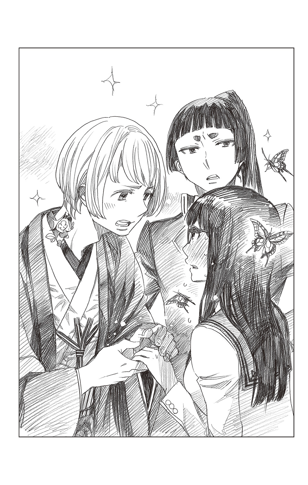
「え？」
「具合の悪い女性を、一人では帰せないでしょう。夢見が悪い」
「神木......くん」
ひんやりとしたその眼差しとは裏腹に、気遣うような声音だった。
「そうだよ。ゆきちゃん、行こう」
しえたがごく自然に雪男の手首をつかんだ。「ゆきちゃんは、普段から頑張り屋さんすぎなんだから。ちょっとぐらい、まわりを頼ってよ。ね？」
「............」
その少し困ったようなやさしい笑顔に、雪男の胸がキュンと鳴る。
「......はい」
としおらしく答えかけ、はっとする。
（――今......僕、『ゆきこ』になりきってた？）
さあっと血の気が引いていく。
まさか、脳がすでにこの状況を受け入れつつあるというのだろうか？
（冗談じゃない!!）
ぞっとした雪男が、慌てて頭を振る。
一刻も早く、このおかしな世界から逃げださなければ......！
「ゆきちゃん？」
「奥村先生？ どうされたんですか？」
「――すみません。しえたくん、出雲くん」
しえたの手をやさしく除けた雪男が、二人の少年に向け、頭を下げる。長い黒髪がさらりと肩から胸に落ちた。
「ちょっと大切な用事を思い出しましたので、僕はここで......。ありがとうございました。もう、大丈夫ですよ」
にっこりとそう言うと、両者に反論の余地を与えず、足早にその場を立ち去った。
夕暮れの街を足早に、正十字学園へと向かう。
代わる代わる声をかけてくる男たちを無視し、しきりに首筋にまとわりついてくる黒い蝶を手で軽く払いながら、胸に強く誓った。
一刻も早く、ここから逃げだそう......と。
（これ以上は、危険だ）
この悪夢のような世界に飲みこまれ、抜け出せなくなってしまう。
そんな気がした。
「――悪夢のようというか、悪夢そのものなんですよ」
他に助けを求めるあてもなく、雪男が学園の最上部にあるヨハン・ファウスト邸を訪れると、メフィスト・フェレスは至極あっさり、そう告げた。
今までの経験から警戒していたような変化は、何故か彼にはなく、元のふざけた理事長のままだ。
「夢......だということですか？ これが？」
「ええ。夢です」
疑わしげな雪男の眼差しを真っ正面から受けたメフィストが、大仰に肯いてみせる。
「ただ、貴方がたが普段、夜寝る時に見る夢とは違います。悪魔の見せる夢です」
「悪魔の？」
雪男がメガネの奥で、片眉を寄せる。
メフィストは愉しげに「ええ」と肯いた。
「〝蟲の王〟ベルゼブブの眷属に〝胡蝶〟という悪魔がいましてね。一見、ただの蝶に見えるんですが、これが、困ったイタズラ好きでして......寄生した人間に悪夢を体感させ、相手の困惑や衝撃、嫌悪や絶望などの負の感情を『餌』とするんです」
「その胡蝶が僕に寄生していると、そう言うんですか？」
尋ねながらも、目が覚めた時に聞いた羽音や、行く先々で見かけた黒い蝶が脳裏をよぎった。
（まさか、アレが......？）
困惑する雪男にメフィストが両目を細める。
「まあ、命まで取るわけではないですし、滅多にできない経験だと思って――」
「今すぐ、元の世界に戻る方法は？」
「おやおや......」
聞く耳持たずという顔で睨みつける雪男に、メフィストが嘆息する。「実に、簡単なことですよ。目を覚まさせてやればいい」
「............」
それを聞いた雪男が、しばし躊躇った後、自分の頰をつねったり、瞼を持ち上げてみたり......と自分自身に刺激を加えた。
メフィストの両目が、糸のように細められる。
「あの～、念のために伺いたいんですが、奥村先生。それは何をなさっていらっしゃるんですか？」
「え？ いえ、ですので、目を覚まそうと――」
雪男が戸惑いがちに答えた瞬間、メフィストが盛大に「ぶーっ!!」と吹き出した。そのまま腹を抱えて笑い転げる。
「な......っ!?」
「いや、失礼。そういうことではありません......悪魔の目を覚まさせてやれということですよ。ククク」
堪えきれぬように忍び笑いをもらすメフィストに、雪男がなんともいえない顔になる。
メフィストは鵺のような嗤いをやめ、
「つまり、胡蝶に無駄だと思わせることです」
と助言した。「貴方はこの悪夢を悪夢だとは思っていない。むしろ、この状況を喜び、大いに堪能しているとします。胡蝶は餌にありつけなくなるわけですから、新たな宿主を探すべく、貴方を解放するでしょう」
「この状況を堪能する？」
思わず顔が引き攣る。
できるはずがない。
だが、このふざけた世界から抜け出すためには、やるしかないのだ。
ぐっと奥歯を嚙みしめ、覚悟を決める。
「具体的に、どうすれば......いいんですか？」
懸命に己を押し殺し教えを乞うと、メフィストが待ってましたとばかりに、抽斗からスケッチブックを取り出した。
最初のページに、『ＳＤＥ５』と大きく書いてある。雪男が片眉をひそめ、
「ＳＤＥ５......？ システム・ディレクター......エンタープライズの略ですか？」
「いえ、ソング＆ダンス・エクソシストの略です」
「はい？」
「近日デビュー予定のアイドルグループ『歌って踊れる美少女エクソシストユニット』の名前ですよ♪ メンバーは、志摩れんさん、勝呂りゅうこさん、三輪こねこさん、奥村りんさん――そして、貴方です!!」
「............」
「双子がいるのが我がＳＤＥの最大のウリです。あと、除霊もできちゃいますし。お経や讃美歌への対応も可能です。あ、プロデューサーはもちろん、私・メフィストですので☆ よろしく」
テヘっと可愛らしく笑ってみせるメフィストに、
「謹んでお断りいたします」
冷ややかに即答する。そんな雪男にメフィストがぴしゃりと言う。
「なら、このままずっと夢の中で過ごされるおつもりですか？」
「!!」
「胡蝶を満腹にさせるという手もありますが、いかんせん胡蝶は大喰らいですから、いつ満腹になるかもわかりません。それまで、この世界で耐えますか？ 耐えられますか？ 貴方に」
「............」
雪男はぐっと言葉に詰まった。
口惜しいが、確かにそれは避けたい。『ゆきこ』に染まってしまうのだけは――。
背に腹は代えられない、と雪男が苦渋の決断を下す。
「――その『ＳＤＥ５』を結成すれば......確実に、ここから抜け出せるんですか？」
忌々しさに震える声で尋ねると、メフィストは満面の笑顔で「ええ」と肯いた。
そして、おもむろにスケッチブックをめくる。そこにはいかにもアイドルチックな可愛らしい衣装に身を包んだ雪男ら五人の――手描きと思しきイラストがあった。やけに上手いのが大変気持ち悪い。
「まずは地下アイドルから始め、絶大な支持を受けてメジャーに。最初は五人のスタートですが、徐々にメンバーを増やし、最大四十九人のグループになる予定です。貴方はそのリーダーとしてメンバーをまとめ、時にぶつかり合い、時に涙し、結束を強めます。握手会でファンとの絆を深め、シングルＣＤを売りさばき、総選挙で最大のライバルである双子の姉を降して、見事首位に立った貴方が、涙ながらに皆に感謝の言葉を述べたところで、無事、元の世界に戻れるでしょう」
「............。因みに......それは何日ぐらいかかるんですか？」
「うーん、ざっと、五年ですかね？」
「長すぎるだろ!!」
怒りのあまり執務机を叩く雪男に、メフィストが大袈裟に驚いてみせる。
「女性に向かって怒鳴るとは、感心しませんね。奥村先生。カルシウムが足りてないんじゃないですか？」
「くっ......すみません......僕としたことが、冷静さを欠いていました――というか、どこに女性がいるんですか？」
「なにを言ってるんですか。目の前にいるでしょうが」
「は？」嘆かわしげにため息を吐くメフィストを、両目を見開いた雪男がまじまじと見つめる。
「――すみません。僕には、以前となんら変わっていないようにしか、見えないのですが」
「なにを言っているんですか。奥村先生ともあろう方が。ちゃんと変わってるじゃないですか。ホラ」
と、メフィストが顎を撫でる。
確かに、そこには髭がなかった。雪男が遠い目になる。
「............髭がないと、女性なんですか？」
「もともと、悪魔に性別など大した意味を持ちませんから。器を変えれば、どんな姿にもなれる――まあ、私のことはどうでもいいんです。それより、今は胡蝶をどうするかではないですか？」
いきなりまっとうなことを言いだすメフィストに、雪男が露骨に顔をしかめつつも、「......はい」と肯く。メフィストはスケッチブックを机に置くと、ゆったりと背もたれに寄りかかった。
「ＳＤＥ５の件はひとまず措いておくとして、手っ取り早く女の人生の歓びを享受する方法を考えるとなると――」
目を細めてそうつぶやく。雪男が真剣な顔で、身を乗り出す。
その姿を愉しげに眺めていたメフィストが、ポンと手を叩いた。
「今日から、高級クラブ『ファウスト』で働いてください」
「はあ!?」
「源氏名は、そうですねぇ......本名のゆきこをもじって『ユッキー』にしましょう。そこでナンバーワンキャバ嬢を目指してください」
「............」
「私がつきっきりで接客のノウハウをお教えしますから、貴方の容姿なら、三か月――いや、二か月でナンバーワンになれるでしょう。なあに、夢から覚めた時は、元の時間からほんの二分程度しか経っていませんから、心配はいりませんよ。浦島太郎のようなことにはなりませんから」
メフィストが笑顔で告げる。
雪男がその場に固まったまま動けずにいると、パチンと指を鳴らし、一眼レフカメラを構えた。
「とりあえず、キャスト写真を撮りましょう。そうですねぇ......せっかくの巨乳を使わない手はありません。胸の谷間を強調させる感じで、両手を頰に当て、頰杖をつくようなポーズで一枚いきましょうか？」
ファインダーをこちらに向けられ、本能的にじりじりと後退る。
椅子から立ち上がったメフィストが、逆にじりじりと間合いを詰めてくる。
「ホラホラ、表情が固いですよ？ 笑顔、笑顔」
「............」
「ふむ......奥村先生はどうにもお堅すぎて、色気に欠ける優等生タイプですから、ギャップ萌えを狙って、胸元はもっと大胆に開けたほうがいいですな。――ああ、バストアップの後は全身でいきますので。そうですねえ、女豹のポーズなんていかがでしょう？」
「!?」
「さあ、撮りますよ。笑って、もっとにっこり。とびきりの笑顔で!! さあ!! お客様から金と指名をもぎ取るつもりで!!」
「――......いや............僕は」
「コラコラ。顔がぎこちない。もっと可愛く、もっと色っぽく、もっと小悪魔的に!! そうじゃないでしょう!? それじゃあ、学生の証明写真だ。そんなことで、ナンバーワンになれると思ってるんですか!?」
「――っ！！！！！！！ 誰がなるかっ！！！！！！！」
ついに我慢の限界を超えた雪男が、そう怒鳴った瞬間――世界が暗転した。
真っ暗な闇に紛れるように、あの黒い蝶が瞬いた気がした......。
闇の中にたゆたいながら、何度も繰り返す。
『ゆきこ』はもういい。
女の世界なんてこりごりだ。
僕にはやはり、男が合っているんだ。
一刻も早く、男に戻りたい......。
男らしい兄さんに、皆に会いたい。僕が本来いるべき、あの場所に戻りたい。
そうしたら、僕は......此の世の誰よりも、男らしくあろう。
僕は男だ――。男なんだ。
「ゆき......オーイ、ゆき......起きろよ」
兄の声がした。
やはり、遠くで叫んでいるような声だが、今度は間違いなく兄の声だ。
「ゆき......オイってば......ゆき............」
「うー......ん......」
重たい瞼を必死に持ち上げる。
まず目に入ってきたのは、まぶしい朝日と、懐かしい兄の顔だった。姉さんではなく、兄さんだ。
（元に、戻れたのか......？ でも、どうして）
自問するうち、おそらく、最後の怒濤のストレスで胡蝶が満腹になったのだろう、という結論にいきつく。ある意味、メフィストのお陰と言えなくもない。
「遅えぞ、雪男。今日は、勝呂たちと約束してんだろ？」
「よかった......兄さん、元に――――」
笑顔でそう言いかけた雪男が、凍りつく。
果たして、兄の顔から下は、ボディビルダーも裸足で逃げだすようなムキムキボディになっていたのである。
「まずはジム行って、それからプロテインバーで一息吐いて、またジムで体鍛えた後に、焼肉食い放題でタンパク質の補給だな!!」
「............」
格闘家が着るような白い道着（なぜか左右の肩から先が破れて存在しない）に包まれた兄の鋼のような筋肉を――男らしい兄を、雪男は半ば呆然自失の態で眺めた。
そんな彼の視界の隅で、二羽に増えた胡蝶がひらりひらりと愉しげに舞った――。
雨が降っていた。
残暑らしからぬ冷たい雨をびっしょりと肩に浴びながら、女将が店の暖簾を片づけていると、背後から声をかけられた。
「あのー......」
はあ、と振り返ると、雨の中、二十代半ばぐらいの男性が立っている。目が合うと、男は遠慮がちに尋ねてきた。
「暖簾を下ろしているということは、もう、おしまいですか？」
「いえ――」
本当は、客足も芳しくないし、今日は早々に店じまいするつもりだった。
だが、男があまりに残念そうな声を出すので、つい「まだ、大丈夫ですよ」と答えてしまう。途端に男の顔がぱあっと明るくなった。
「本当ですか？」
うれしそうに顔をくしゃりとさせる。それから、慌てて「ありがとうございます」と礼を言った。
琵琶湖の近くの商店街にある〝雪の里〟は、ごくごく小さな居酒屋だ。女将一人で切り盛りしているため、座席もカウンターの七席しかない。
出口から二つ目の席に腰を下ろした男は、お品書きに軽く目を通すと、青ネギのぬたにマグロのブツ、水茄子の漬物に小海老のかき揚げ、そして日本酒を冷やで頼んだ。その後、メニューにざる蕎麦があることに気づくと、喜んでそれも頼んだ。
「うれしいなあ。私、蕎麦が大好物なんですよ。蕎麦と日本酒。最高ですよねぇ」
「まあ」
仕事の場でもないのに、若い男が自分を『私』というのは珍しい。よくよく観察すると、見るからに育ちのよさそうな男だった。
中肉中背。薄っすらとそばかすの浮いた顔は幼く、学生のようにも見える。――が、おそらくは会社帰りなのだろう。ストライプのシャツを仕立てのよいスーツに合わせ、細身のトレンチコートを羽織ったその姿は、いかにも爽やかな好青年だった。
「うちはねえ、もともと、蕎麦屋なんですよ」
「え？ そうなんですか？」
蕎麦打ちの名人だった主人が急逝し、店の経営が苦しくなったことで、酒を出す吞み屋に鞍替えしたのだ。
そんなことを話しながら、熱いおしぼりを出す。男はいそいそと受け取ると、まず初めにそれで顔を拭いた。ほお～と長いため息を吐く。そして、女将の視線に気づくと、照れたように笑ってみせた。
「......いやあ、オヤジ臭くてすみません。つい癖で」
いいえ、と笑う。
お仕事帰りですか、と尋ねると青年は頭を振った。
「ちょうど仕事の合間で、気ままに一人旅を満喫中です」
おどけたように答える。全国津々浦々の日本酒を飲んでまわっているというから、優雅なことだ。
おそらくはいいとこの坊ちゃんで、両親や兄姉に可愛がられ、なに不自由なく育ったのだろう。明るく屈託のない性格や、明朗なしゃべり方は、誰からも好かれそうだ。
男は女将が出した肴をキレイに平らげ、美味そうに酒を飲んだ。
とりわけ、亡き夫直伝の蕎麦つゆを喜び、追加でもう一人前頼んだ。今度は、熱燗を注文する。
「いい店ですねえ。ここを見つけられてラッキーだったなあ」
「ふふ。ありがとうございます」
素直な賛辞に、商売っ気なしで女将が目尻を緩める。
引き戸の向こうの雨足が少し弱まったように思えた。
バケツをひっくり返したかのように強まったかと思うと、次の瞬間には弱まっている。
「驟雨ですね」
「え......？」
「強まったかと思うと弱まって、弱まったかと思うと、また急に強まって――そんなことをしているうちにやみますよ」
人の一生と同じだ。
若い男はそう言うと、静かにお猪口を傾けた。
その一瞬だけ、ひどく年老いた男と話しているように錯覚した。
「お客さ――」
声をかけようとすると、ガラリと乱暴な音と共に玄関の引き戸が開いた。見るからに泥酔状態の男が三人、ずかずかと入りこんでくる。
「あー？ なんだよこのしけた店は......」
「この時間にガラガラじゃねーか。おいおい。大丈夫かよ？」
「んだよ。こんな店しかねーのかよ。チッ」
酔っ払って気が大きくなったのか、もともと柄が悪いのか、酔っ払いたちが口々に悪態を吐く。中の一人は、出口近くの椅子を蹴ってみせた。ドン、と嫌な音が響く。
こんな店で悪かったわね、と思いつつも、
「お客様......他のお客様のご迷惑になりますので」
やんわり注意を促す。
すると、三人が一斉に気色ばんだ。
「はああああ？」
「他のお客様って誰だよ？ いるのはこの坊ちゃんだけじゃねーか」
「なあ、おたく、ご迷惑かかってんの？ ねえ？」
酔っ払いの一人が青年の肩に手を置く。「かかってねーよなぁ？ ボクちゃんはもうお家に帰るんだもんねぇー？」
ぎゃはははと笑い、他の二人もそれに合わせる。
そこで、青年がすっと立ち上がった。
てっきり、逃げだすのだろうと思い、「ああ、お会計ですね？」と言ってレジに向かう。しかし、青年は「いいえ」と頭を振ると、悠然と男たちを見やった。
そして、あろうことか、
「――ここでは、お店に迷惑がかかりますし、外で話しませんか？」
そう言ってにっこり微笑んだのだった......。
ひどくやわらかなはずの男の声音が、どうしてか――外を濡らしている雨よりも冷たく感じられた。
どうなったのだろう......。
やっぱり無理やりにでも止めるべきだっただろうか？
あれからいくらも経っていないが、なにせ、多勢に無勢だ。
今からでも警察に連絡すべきだろう。
それとも、となりの酒屋の主人と息子に仲裁に入ってもらおうか......。
女将がやきもきしていると、からりと涼やかな音で引き戸が開いた。そこには、例の青年が立っていた。
「どうも、戻りました」
「ああ......!!」
と、思わず身を乗り出す。「お客さん!! 大丈夫でした!? アイツらに殴られたりとかしませんでした？」
「ええ、この通りピンピンしてます」
青年は屈託なくそう答えると、なに食わぬ顔で元の席に戻り、何事もなかったように続きの蕎麦を食べ始めた。
女将は安堵のあまり、ふうっと息を吐き出した。
「私は......てっきり、殴り合いにでもなってるかと」
「ははは。私は臆病者の平和主義者ですから」
そう言って笑うと、男は蕎麦をつぅっと吸い上げた。至って落ち着いたその様子からも、荒事があったとは思えない。
きっと、何かしら策を弄して上手く矛を収めてくれたのだろう。
女将はもう一度ため息をつくと、せめてものお礼にと、男のためにぬる燗を新しくつけ、出汁巻き玉子をサービスした。
学生のような若い男は、はにかんだ笑顔でそれを受け取った。
その日の客は彼で終わりだった。
雨はいつの間にか止んでいた。
それから、半月――。
女将が一人で開店の準備をしていると、正十字騎士團の團服を着た二人の祓魔師が店に入ってきた。
「申し訳ありません。まだ、準備中で......」
「いえ、本日は捜査の協力をしていただきに参りました」
角刈り頭の厳しい表情をした祓魔師がそう言うと、となりで待機していたうらなりのような若い祓魔師が、一枚の古びたスナップ写真を女将の目の前にかざした。
「この人物に見覚えは？」
「え――」
思わず、呼吸が止まった。
そこに写っているのは、あの雨の日に出会った青年によく似た男だった。
軍服のように厳しい團服を着ているせいか、あの明るく人懐っこい笑顔や雰囲気はなりをひそめ、むしろ陰鬱な印象を受けた。カメラを向けられて無理やり浮かべたのだろう――押し殺したような笑みが、気の毒でさえあった。
その歪な笑顔を見た瞬間、女将は咄嗟に、
「――ありません」
そう答えていた。角刈りが眉間に深いしわを寄せる。
「本当ですか？ 数日前この辺りで見かけたという目撃証言があったんですが......恐縮ですが、よく思い出していただけませんか？」
「何度聞かれても同じです。そんな方、見たこともありません」
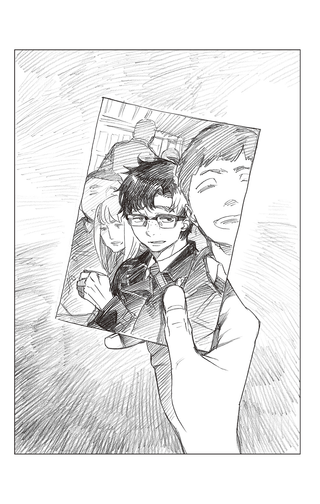
何かに引っ張られるように答える。
何故、自分がそんなことを言っているのか不思議だった。落胆した様子の祓魔師を前に、心臓がバクバクと音を立てる。
ちょうど、若い祓魔師のいたところに、あの日、あの男が立っていたのだ。
「あの......」
絞り出すように声を出す。「その方は......何をしたんでしょうか？」
女将の問いに、二人の祓魔師は顔を見合わせると、
「詳しくは言えませんが――」
若いほうが答えた。
「この男のしたことで、多くの人命が奪われるところでした」
「!!」
心臓が大きく跳ねた。
その場でふらりとよろめきかけ、必死にそれを堪える。
二人組の祓魔師は、この男を見かけたらすぐに報せるようにと言い残し、コピーした顔写真を置いて去っていった。
多くの人の命が、あの男のせいで奪われるところだった？
あの人は一体、何をしたのだろう？
なにより、自分はどうして『知らない』などと答えてしまったのか――。
今からでも遅くない。二人を追いかけて、本当は知っていると教えなければならない。そうしなければ、大変なことになるかもしれない。
なのに、己の両足はまるで石のように固まって、動かなかった。
相変わらず、どくんどくんと大きな音を立て続ける心臓を抱え、受け取ったばかりの写真のコピーに視線を落とす。
美味そうに蕎麦を啜っていた明るい彼の姿が、この――どこか苦しげな男とどうしても重ならない。
どのくらい、そうしていただろう......。
気づけば、また雨が降っていた。
驟雨を人の一生に喩えた青年。
彼の人生もまた、こんなふうに弱く、強く降りしきり、そしてぴたりと止んでしまうのだろうか――？
そんなことを考えるでもなく思いながら、為す術もなく、女将はただそこに立ち尽くした......。
まずは、お手に取ってくださった皆さん、ありがとうございます！
約三年ぶりに小説４弾が実現して、とても嬉しいです！
第３弾発売前か後に、「小説四冊目がもし実現したら、カオスでふざけた内容でも面白いですね～」なんて事を担当編集さんを挟んでお話した記憶はあったのですが、実現した今、まさかここまで全力でカオスなラインナップになるとは思っておらず、相当笑いました。
久しぶりに青エクに関わっていただいたのに、キャラクターをちゃんと覚えてくださってて、大変ありがたかったです。そしてまさかのこのカオスラインナップをあったかくまとめあげる手腕はさすが矢島先生だな...と！（笑）
なので、今回の表紙は表題のエピソードの主人公（？）志摩を中心に、私も負けじとカオス感を大切に描いてみました！ 挿絵も鉛筆ですが僅かながら描き下ろしております。小説を読む足しにしていただければ...！
矢島先生にはアニメ二期に併せて、この本だけでなく、たくさんお話を書き下ろしていただいてまして、本当にありがとうございます...！ そして担当の六郷さま、私の仕事が遅くて申し訳ありません！ 兎にも角にも、お疲れさまでした!!
読んでくださった皆さんが楽しんでくださって、もしかして第５弾があり得るなら、とてもとても嬉しいです！
加藤和恵
この度は、『青の祓魔師』ノベライズ・第４弾を書かせていただき、ありがとうございました......！ 再び、大好きな青エクの世界にどっぷり浸ることが出来、感無量です。
加藤先生、殺人的なスケジュールの中、素晴らしすぎるイラストをありがとうございました！ あまりの可愛さに本気で息が止まりました。しばらくの間、何も手につかず、パソコンの前をうろうろしてしまいました......。しかも、Ｔｗｉｔｔｅｒで拝見して以来、夢にまで見た性別転換ネタを快く許可していただいた上に、煩悩まみれの褌祭りまで書かせていただいて......!! 幸せすぎて倒れそうです。本当に、本当にありがとうございました。
細やかな心遣いと、鋭いツッコミ、そして熱い青エク愛を以って導いてくださった担当の六郷さま、いつ伺っても明るく楽しいｊ‐ＢＯＯＫＳ編集部の皆さま、エネルギッシュなのに爽やかなＳＱ．担当の林さま、ユニークすぎるチェックで和ませてくださった校正の北さま、そして、この本に携わってくださった沢山の方々、本当にありがとうございます。お世話になりました。
最後に、この本を読んでくださった皆さまに、心からの感謝を......！
ワクワクしながらマンガ本編を読み、ドキドキしながらアニメを観て――その延長線上で、この小説版も楽しんでいただけたら......と願っております。
矢島綾
■初出
青の祓魔師 スパイ・ゲーム 書き下ろし
加藤和恵
２０００年に手塚賞を受賞しデビュー。ジャンプＳＱ．にて２００９年「青の祓魔師」連載開始。
去年読んだ本は「残穢」と「ゴーストハント」シリーズです。
矢島綾
ジャンプ小説新人賞にて佳作を受賞、「天空をわたる花 東国呼子弔忌談」でデビュー。「青の祓魔師」の大ファン!!
ジャンプジェイブックスDIGITAL
［青の祓魔師］スパイ・ゲーム
著者 加藤和恵／矢島綾
© 2017 K.KATO/A.YAJIMA
２０１７年４月30日発行
この電子書籍は、ジャンプジェイブックス「青の祓魔師 スパイ・ゲーム」
２０１７年３月８日発行の第１刷を底本としています。
装丁 シマダヒデアキ＋浅見大樹［L.S.D.］
担当編集 六郷祐介
編集人 浅田貴典
発行者 鈴木晴彦
発行所 株式会社 集英社
〒１０１－８０５０
東京都千代田区一ツ橋２丁目５番10号
０３－３２３０－６０８０（読者係）
制作所 株式会社ＩＣＥ
本作品の全部または一部を無断で複製、転載、改竄、インターネット上に掲載すること、および有償無償に関わらず、本データを第三者に譲渡することを禁じます。なお個人利用の目的であっても、コピーガードを解除しての複製は、法律で禁じられています。